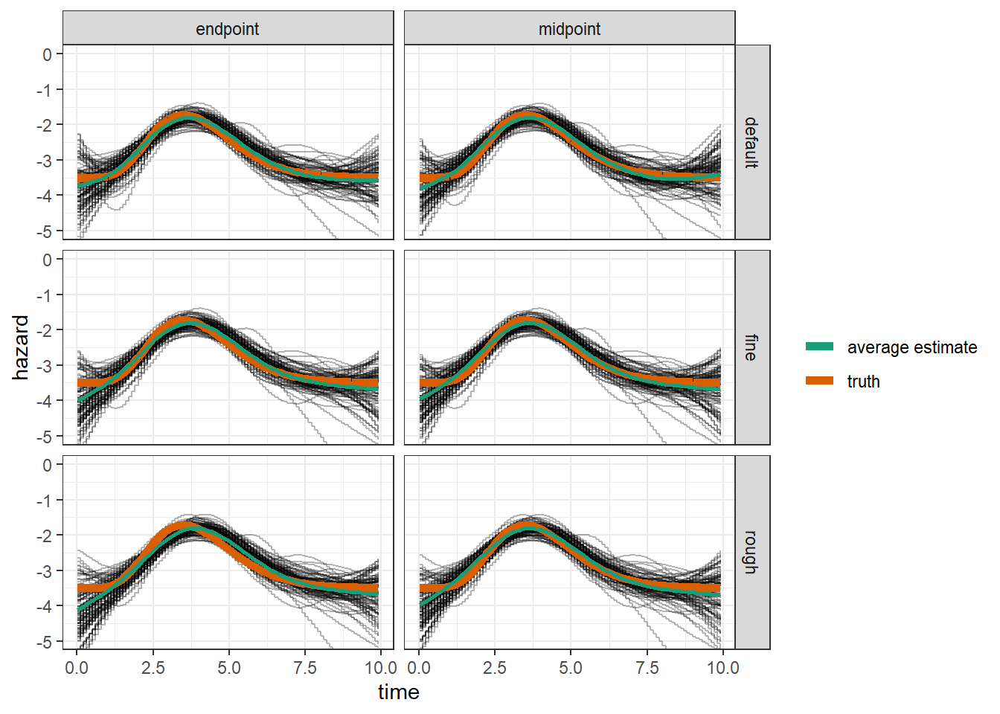

Last updated: 2023-01-15
Checks: 7 0
Knit directory: pam_tend_tmid/
This reproducible R Markdown analysis was created with workflowr (version 1.7.0). The Checks tab describes the reproducibility checks that were applied when the results were created. The Past versions tab lists the development history.
Great! Since the R Markdown file has been committed to the Git repository, you know the exact version of the code that produced these results.
Great job! The global environment was empty. Objects defined in the global environment can affect the analysis in your R Markdown file in unknown ways. For reproduciblity it’s best to always run the code in an empty environment.
The command set.seed(20180517) was run prior to running
the code in the R Markdown file. Setting a seed ensures that any results
that rely on randomness, e.g. subsampling or permutations, are
reproducible.
Great job! Recording the operating system, R version, and package versions is critical for reproducibility.
Nice! There were no cached chunks for this analysis, so you can be confident that you successfully produced the results during this run.
Great job! Using relative paths to the files within your workflowr project makes it easier to run your code on other machines.
Great! You are using Git for version control. Tracking code development and connecting the code version to the results is critical for reproducibility.
The results in this page were generated with repository version a92e401. See the Past versions tab to see a history of the changes made to the R Markdown and HTML files.
Note that you need to be careful to ensure that all relevant files for
the analysis have been committed to Git prior to generating the results
(you can use wflow_publish or
wflow_git_commit). workflowr only checks the R Markdown
file, but you know if there are other scripts or data files that it
depends on. Below is the status of the Git repository when the results
were generated:
Ignored files:
Ignored: .Rproj.user/
Ignored: output/sim-pam-tmid-registry/exports/
Ignored: output/sim-pam-tmid-registry/external/
Ignored: output/sim-pam-tmid-registry/jobs/
Untracked files:
Untracked: output/sim-conf-tmid-registry/
Untracked: output/sim-pam-tmid-registry/logs/job00252f7c2c50d1a88a8c842de0bc7c82.log
Untracked: output/sim-pam-tmid-registry/logs/job009af9b4ee427dcf4f245778935490d9.log
Untracked: output/sim-pam-tmid-registry/logs/job00dc6d0067f291b076a56ac7e4a35e34.log
Untracked: output/sim-pam-tmid-registry/logs/job00f8cb853a335bb3a048d23ccc68cd18.log
Untracked: output/sim-pam-tmid-registry/logs/job01793ed2b0a43593e0104b5a83762abc.log
Untracked: output/sim-pam-tmid-registry/logs/job0206f1ccdb016fd32b05aed3d8dbeae6.log
Untracked: output/sim-pam-tmid-registry/logs/job022336502c0d27583c8ae2ad337c9161.log
Untracked: output/sim-pam-tmid-registry/logs/job027d446110e6e77677365929479dde41.log
Untracked: output/sim-pam-tmid-registry/logs/job0506002ff7d0ad45876f3043c67aed10.log
Untracked: output/sim-pam-tmid-registry/logs/job05702afa7bb162b58341a444cf3b09b9.log
Untracked: output/sim-pam-tmid-registry/logs/job05943e75014283a9964be80071ba0f0c.log
Untracked: output/sim-pam-tmid-registry/logs/job0694324e74938822d9b0efb5c3e0e2bd.log
Untracked: output/sim-pam-tmid-registry/logs/job06a271706e9759dbd2ac205af605cddd.log
Untracked: output/sim-pam-tmid-registry/logs/job074c2a2e12e499990fe4211ab7801a3d.log
Untracked: output/sim-pam-tmid-registry/logs/job0799f43ec4a84c61fb63b92cec3d8d99.log
Untracked: output/sim-pam-tmid-registry/logs/job07d7c827c655f59a4df2ce433bd5b872.log
Untracked: output/sim-pam-tmid-registry/logs/job07f1dd9c34f174b113b5fe23589f3684.log
Untracked: output/sim-pam-tmid-registry/logs/job07fbe1676e6fc6fd4ca0f59bb5bf14f4.log
Untracked: output/sim-pam-tmid-registry/logs/job0951f9159e41f4e80905ba60900477d7.log
Untracked: output/sim-pam-tmid-registry/logs/job096542cd1549fb7ee3572e031601b679.log
Untracked: output/sim-pam-tmid-registry/logs/job0a5249364b124372e1a4376f336f09fa.log
Untracked: output/sim-pam-tmid-registry/logs/job0b0bd86598474a35181992f76be54fdb.log
Untracked: output/sim-pam-tmid-registry/logs/job0b43659c4c63e694429b222d40050684.log
Untracked: output/sim-pam-tmid-registry/logs/job0c54360e69593876a0c29b772534d73c.log
Untracked: output/sim-pam-tmid-registry/logs/job0ca9dc9044838990e506f2942a98618b.log
Untracked: output/sim-pam-tmid-registry/logs/job0cc1df2ef1c0e73ed66fd36a1eea22ba.log
Untracked: output/sim-pam-tmid-registry/logs/job0d28192eb3db9d16928e39e615363532.log
Untracked: output/sim-pam-tmid-registry/logs/job0d38110d5a6d0f0002ad9ae67b794081.log
Untracked: output/sim-pam-tmid-registry/logs/job0d6d4630fc99bf55c5eb76be4e126cc2.log
Untracked: output/sim-pam-tmid-registry/logs/job0dac6c32c0b87a7470574f7d30fa8461.log
Untracked: output/sim-pam-tmid-registry/logs/job0e82cf0163873780dd63ad7264794fbb.log
Untracked: output/sim-pam-tmid-registry/logs/job0e84087ee5db3a6845b0e378427dad35.log
Untracked: output/sim-pam-tmid-registry/logs/job0ef975db57fe44909662627be6653710.log
Untracked: output/sim-pam-tmid-registry/logs/job0f25fba3c96c0ebfecd41933e0bbd84c.log
Untracked: output/sim-pam-tmid-registry/logs/job0f373eea33ccb7e5989c9fb52a9fa1b4.log
Untracked: output/sim-pam-tmid-registry/logs/job0f3d8c27b13c11b74e9383a39fb301c1.log
Untracked: output/sim-pam-tmid-registry/logs/job0fe290994080090d816aacfbe7dac4ab.log
Untracked: output/sim-pam-tmid-registry/logs/job10237e414177b70e1c5116b202119047.log
Untracked: output/sim-pam-tmid-registry/logs/job1158360fea1572d0b9fa2927dc87dbf2.log
Untracked: output/sim-pam-tmid-registry/logs/job129e6860f49ace14302ada5257bbb7cb.log
Untracked: output/sim-pam-tmid-registry/logs/job12c6f9630713c63f95864539cca4c143.log
Untracked: output/sim-pam-tmid-registry/logs/job1368fec5c8eceb4ca61ec7089296789d.log
Untracked: output/sim-pam-tmid-registry/logs/job139f49e911db8bee5747f74dcd9531ac.log
Untracked: output/sim-pam-tmid-registry/logs/job1501446adea1fcb7c0c6884dd625b424.log
Untracked: output/sim-pam-tmid-registry/logs/job1527fa5e91a02ba4cf9d84f58277a953.log
Untracked: output/sim-pam-tmid-registry/logs/job159cbac0f5f3cbc858b77c748020cf61.log
Untracked: output/sim-pam-tmid-registry/logs/job165061c56cb59aa2fe4e08be0081b53e.log
Untracked: output/sim-pam-tmid-registry/logs/job1719a190c9fe2900fd1f74e077545b05.log
Untracked: output/sim-pam-tmid-registry/logs/job1719c8a1dc158ba727c7f225b2a0071d.log
Untracked: output/sim-pam-tmid-registry/logs/job1819c67406dbbf891dc95a0d0397059d.log
Untracked: output/sim-pam-tmid-registry/logs/job18240d3e502c8479bbfa0286beb566d4.log
Untracked: output/sim-pam-tmid-registry/logs/job18a0f3b00133c1ab63b7c9dbba36414b.log
Untracked: output/sim-pam-tmid-registry/logs/job1970909ec49aded5137a01c9c83525a9.log
Untracked: output/sim-pam-tmid-registry/logs/job1990cb33206b646911389c88cc9ef529.log
Untracked: output/sim-pam-tmid-registry/logs/job1a79d39261e4585525512526ef6cdc5a.log
Untracked: output/sim-pam-tmid-registry/logs/job1aa1f2807f6a46644b4ad95462c88d40.log
Untracked: output/sim-pam-tmid-registry/logs/job1b4add8064e312eb07634fc77e6a16eb.log
Untracked: output/sim-pam-tmid-registry/logs/job1b8b0d12a4a34756e00e58d00d5f883b.log
Untracked: output/sim-pam-tmid-registry/logs/job1be6b2063bfc6df0c24fac0739f4821e.log
Untracked: output/sim-pam-tmid-registry/logs/job1c7e24847dfa5d93d26633e67ca41133.log
Untracked: output/sim-pam-tmid-registry/logs/job1dee8780a7055e3dac150221d37aead5.log
Untracked: output/sim-pam-tmid-registry/logs/job1e10cfbdfd65e1e64550cae171247624.log
Untracked: output/sim-pam-tmid-registry/logs/job1e7cf7c00f68c754f49ff835b1f8ce89.log
Untracked: output/sim-pam-tmid-registry/logs/job1ee5c150d24259e531a97aa045dcb26b.log
Untracked: output/sim-pam-tmid-registry/logs/job1ef98d3c9a7e8425b71d858802e25e9a.log
Untracked: output/sim-pam-tmid-registry/logs/job20db55bd53bc1a1b51c2c9ae28b1450a.log
Untracked: output/sim-pam-tmid-registry/logs/job212eb700d16eac831793dee3f878843a.log
Untracked: output/sim-pam-tmid-registry/logs/job2137edea916dbac689bc93b74199b80b.log
Untracked: output/sim-pam-tmid-registry/logs/job221c2f844a9722287117a990c01bf82b.log
Untracked: output/sim-pam-tmid-registry/logs/job222a2f7893fb63ef17c43aee5a32a205.log
Untracked: output/sim-pam-tmid-registry/logs/job2268c69a56aabd0fbab04e101416fbc5.log
Untracked: output/sim-pam-tmid-registry/logs/job234735493580ec06c7a458b83697c142.log
Untracked: output/sim-pam-tmid-registry/logs/job25711dabe394d40a767c20eb63e17573.log
Untracked: output/sim-pam-tmid-registry/logs/job25cd14dc47ed4a4174bf511147cd439d.log
Untracked: output/sim-pam-tmid-registry/logs/job2639e4fe395fb00fe5a6ffa47df3cf0d.log
Untracked: output/sim-pam-tmid-registry/logs/job26737a357e39253a17428a6ed6ecc33c.log
Untracked: output/sim-pam-tmid-registry/logs/job267b877ea3891b0e65b3f44aea6ec952.log
Untracked: output/sim-pam-tmid-registry/logs/job27651d1777697f27f69deedf19482ad6.log
Untracked: output/sim-pam-tmid-registry/logs/job27f48ceaf020ccfdc54f75411df3f1d1.log
Untracked: output/sim-pam-tmid-registry/logs/job280c8233cea9165b02002e32b3ab0c90.log
Untracked: output/sim-pam-tmid-registry/logs/job28c305a5dfd5ec5b08d1f33cc8985706.log
Untracked: output/sim-pam-tmid-registry/logs/job28edf77efb8a599851e1c64d4f6fa891.log
Untracked: output/sim-pam-tmid-registry/logs/job293a9b27285f80c81f179d101120c3f1.log
Untracked: output/sim-pam-tmid-registry/logs/job29d29a09b58b7aa0c70592186e126c12.log
Untracked: output/sim-pam-tmid-registry/logs/job2abc4ff70b13f1cafbb2a67ef6a49d74.log
Untracked: output/sim-pam-tmid-registry/logs/job2aedd1125994d4dde31f4a1ca7581290.log
Untracked: output/sim-pam-tmid-registry/logs/job2b2405648a9ac4e1cdb2c5b348825634.log
Untracked: output/sim-pam-tmid-registry/logs/job2b9fce3713da9dcf4e84b8d0be9b9d56.log
Untracked: output/sim-pam-tmid-registry/logs/job2d322511033a21bb5ec42fe01fb8ddad.log
Untracked: output/sim-pam-tmid-registry/logs/job2dacd2da9f3b5bf567cbd87fde1fa0bf.log
Untracked: output/sim-pam-tmid-registry/logs/job2e44f3499d7289236a7bbf9ba103684f.log
Untracked: output/sim-pam-tmid-registry/logs/job2e5d0807985c61280d3aa68a3a1f4070.log
Untracked: output/sim-pam-tmid-registry/logs/job2e9748e544fa1240994320e994353799.log
Untracked: output/sim-pam-tmid-registry/logs/job2ef81c56ff3fb98ab4fcd7647d929351.log
Untracked: output/sim-pam-tmid-registry/logs/job2f60c695ef19a51503b663bd7e53d5e6.log
Untracked: output/sim-pam-tmid-registry/logs/job2fab2b259e7281e9a59ff23eacfcdb1c.log
Untracked: output/sim-pam-tmid-registry/logs/job32f7bcf00b5d8904d902ba68707e0ee7.log
Untracked: output/sim-pam-tmid-registry/logs/job3383ef4d81da1ce827729061c2d74861.log
Untracked: output/sim-pam-tmid-registry/logs/job3405ffd101ad4d6b11562e901958dc81.log
Untracked: output/sim-pam-tmid-registry/logs/job3423b2636a2e3cc03852fa1ae4a9f3ba.log
Untracked: output/sim-pam-tmid-registry/logs/job347ef4be6457475db4b18ec5a0bc70f1.log
Untracked: output/sim-pam-tmid-registry/logs/job34813dc208d195b5e325eb6a94a5bf8a.log
Untracked: output/sim-pam-tmid-registry/logs/job34b16ed1b10fd2ef78c0d76ddf086130.log
Untracked: output/sim-pam-tmid-registry/logs/job35f0cc8ab32e6f2f891ff0bf1b0561f0.log
Untracked: output/sim-pam-tmid-registry/logs/job365d71a92dece58bee1baea561942771.log
Untracked: output/sim-pam-tmid-registry/logs/job36933990547903620aa31bb5f69fc6e4.log
Untracked: output/sim-pam-tmid-registry/logs/job374cbfd3cdbe5866edf465b62cfada1d.log
Untracked: output/sim-pam-tmid-registry/logs/job37ad59304f4738effcf6d0d0adddafb6.log
Untracked: output/sim-pam-tmid-registry/logs/job382cbc6ec9c6d1aa1ee67741d368a9d5.log
Untracked: output/sim-pam-tmid-registry/logs/job383f7d5e1612681762839a38b3416ac6.log
Untracked: output/sim-pam-tmid-registry/logs/job38dbcac10a0b84805d691975c66baa9c.log
Untracked: output/sim-pam-tmid-registry/logs/job392b5c3ecf6bd2e6156547284e01134b.log
Untracked: output/sim-pam-tmid-registry/logs/job3a5de551e63cdc849022c71230c1f229.log
Untracked: output/sim-pam-tmid-registry/logs/job3a79744698db587a7134f53649dbc55f.log
Untracked: output/sim-pam-tmid-registry/logs/job3aacd25784b177ed28361adca4321106.log
Untracked: output/sim-pam-tmid-registry/logs/job3b1ae97e6a23c628dcba2084463e3bd7.log
Untracked: output/sim-pam-tmid-registry/logs/job3b9a0f245e868148586524e6f49bb389.log
Untracked: output/sim-pam-tmid-registry/logs/job3bde86e5d7e9ca7104c0495ff800b8d9.log
Untracked: output/sim-pam-tmid-registry/logs/job3cc98d7ca8de9af3f3555c9ffeb93c4d.log
Untracked: output/sim-pam-tmid-registry/logs/job3cd040f319467093ef0ac3aeaf3bf15f.log
Untracked: output/sim-pam-tmid-registry/logs/job3cfc5908fe189deeeae2139f3cea36b0.log
Untracked: output/sim-pam-tmid-registry/logs/job3d1048dd8727ae971ce737cf776ac44f.log
Untracked: output/sim-pam-tmid-registry/logs/job3d7ea2be8da4ea4d0bc23802957b3508.log
Untracked: output/sim-pam-tmid-registry/logs/job3e7f98288e795eaa378add692a247870.log
Untracked: output/sim-pam-tmid-registry/logs/job3ec2e9f6e95d0cff87d561353e354f00.log
Untracked: output/sim-pam-tmid-registry/logs/job3f272f01f1dfc87571fb63cc3af132fc.log
Untracked: output/sim-pam-tmid-registry/logs/job3f4af0f397d43d62456a166c83b0893e.log
Untracked: output/sim-pam-tmid-registry/logs/job4056f5abf305f7bc3d69e83e15b55607.log
Untracked: output/sim-pam-tmid-registry/logs/job40b19e07780bf8226085249f0c6bc153.log
Untracked: output/sim-pam-tmid-registry/logs/job40f6fdec4ad9d4149b98ee90b95a3c98.log
Untracked: output/sim-pam-tmid-registry/logs/job410fa9fabde4bba57206d84024e784cc.log
Untracked: output/sim-pam-tmid-registry/logs/job411120babca1d7dba107491e045db3e1.log
Untracked: output/sim-pam-tmid-registry/logs/job41e4f4bc2d62ee85bbb0f34fd5d2a693.log
Untracked: output/sim-pam-tmid-registry/logs/job421d2bba59298863bed8248cc17af531.log
Untracked: output/sim-pam-tmid-registry/logs/job422a5e6099d5cfed22dabca9a5726b8a.log
Untracked: output/sim-pam-tmid-registry/logs/job436bd096f5854a7286917a963a2f7667.log
Untracked: output/sim-pam-tmid-registry/logs/job43c339c49ed7a139ac82c053a5516854.log
Untracked: output/sim-pam-tmid-registry/logs/job449ad6db2cfabe1f9749b3a923b4748b.log
Untracked: output/sim-pam-tmid-registry/logs/job44d8f740f9fac9dae67fc2379893921d.log
Untracked: output/sim-pam-tmid-registry/logs/job451d7bdf3a2de78fd6bfaf60ce9c0420.log
Untracked: output/sim-pam-tmid-registry/logs/job45492d753f4f7c29933f7020f6832cf7.log
Untracked: output/sim-pam-tmid-registry/logs/job459cff08055bd17c49b76dcc0a63c38f.log
Untracked: output/sim-pam-tmid-registry/logs/job45e8c04b5d974ff46ee154c0da2ba39b.log
Untracked: output/sim-pam-tmid-registry/logs/job4605c212a5c56279cb96e92b2cf4b52d.log
Untracked: output/sim-pam-tmid-registry/logs/job47093404d2ef78f7d55b36833cef1b59.log
Untracked: output/sim-pam-tmid-registry/logs/job475e8f8ad66eed4edaa029f5e0f5029b.log
Untracked: output/sim-pam-tmid-registry/logs/job476359fba7a8c3174647bac2f189eb3c.log
Untracked: output/sim-pam-tmid-registry/logs/job478b084326e8e6fdba19dc3533f3e947.log
Untracked: output/sim-pam-tmid-registry/logs/job47db72d176b3627e3125dc46f576afb7.log
Untracked: output/sim-pam-tmid-registry/logs/job47f354106ad50830e3b53099e886dfd1.log
Untracked: output/sim-pam-tmid-registry/logs/job48576490acf80678fcd32773198b0fd3.log
Untracked: output/sim-pam-tmid-registry/logs/job486a46c4f7d81ae506d50934ce468b19.log
Untracked: output/sim-pam-tmid-registry/logs/job48f621092c5acbf2c9e1285136264e73.log
Untracked: output/sim-pam-tmid-registry/logs/job490895336f3e9e8259f0fcef36d8dcc6.log
Untracked: output/sim-pam-tmid-registry/logs/job49286f618cbcb6c07e010df4e5ae75ac.log
Untracked: output/sim-pam-tmid-registry/logs/job49390e117c1df967fd68ee0b4f45e6f5.log
Untracked: output/sim-pam-tmid-registry/logs/job499f59abaf5af62ddba1a3ff2c20708a.log
Untracked: output/sim-pam-tmid-registry/logs/job49ae3690b3fdf8c75a5e4ee347b47bc8.log
Untracked: output/sim-pam-tmid-registry/logs/job49de7abc5379064652ad91b4f1744fae.log
Untracked: output/sim-pam-tmid-registry/logs/job4ae14b1b13eef1062671a7380038e780.log
Untracked: output/sim-pam-tmid-registry/logs/job4b0294b194d664878130485a32461ba6.log
Untracked: output/sim-pam-tmid-registry/logs/job4b1d2588f09a95683cdcc53ef5b80e8d.log
Untracked: output/sim-pam-tmid-registry/logs/job4b61ad0ab53a49d3f501941f33380b50.log
Untracked: output/sim-pam-tmid-registry/logs/job4b91f15b3261cb8b6e7c975473b79364.log
Untracked: output/sim-pam-tmid-registry/logs/job4bbc6e49a1caa4bad17a7547fb1f39b2.log
Untracked: output/sim-pam-tmid-registry/logs/job4be8051728a111f6aaa5300cfd19fe42.log
Untracked: output/sim-pam-tmid-registry/logs/job4bf43f5808a960d77980c40e69c7d5d0.log
Untracked: output/sim-pam-tmid-registry/logs/job4c2c98676099a71391010856cbdfcbff.log
Untracked: output/sim-pam-tmid-registry/logs/job4cd48f0ac0d3d9543e966088e0a13c17.log
Untracked: output/sim-pam-tmid-registry/logs/job4cee0cc729488b452d47ee67eaa3de2f.log
Untracked: output/sim-pam-tmid-registry/logs/job4d0aa74bd05bc3c4312a99443551656a.log
Untracked: output/sim-pam-tmid-registry/logs/job4d338f15dd6b0cde2cca35bd1a36418d.log
Untracked: output/sim-pam-tmid-registry/logs/job4e9e31cb4c8d73d40fd584d02b1d66ae.log
Untracked: output/sim-pam-tmid-registry/logs/job4f01fe0bce776b77076d67d1d336a93a.log
Untracked: output/sim-pam-tmid-registry/logs/job4f9828d451d17dac88eee1affec8007b.log
Untracked: output/sim-pam-tmid-registry/logs/job4f99c5604f75609ddf503af35aeffcdc.log
Untracked: output/sim-pam-tmid-registry/logs/job4faa23d6b098a7032b4ed61b35c9c867.log
Untracked: output/sim-pam-tmid-registry/logs/job4faeb33afda188eab47cceb4b800cd63.log
Untracked: output/sim-pam-tmid-registry/logs/job4fd3aa742f9a37dbcd279fcd5a4121d1.log
Untracked: output/sim-pam-tmid-registry/logs/job4fda89ef71628657271b0aa2c0e3f651.log
Untracked: output/sim-pam-tmid-registry/logs/job50d5370b0d37acaa9056327176a7f416.log
Untracked: output/sim-pam-tmid-registry/logs/job527f80b5cb9c9e13a2f5ca363c267e13.log
Untracked: output/sim-pam-tmid-registry/logs/job52830f5527f9af184a78dc1a9fbbbbdf.log
Untracked: output/sim-pam-tmid-registry/logs/job52fb217936f972aa17ddc992676acc84.log
Untracked: output/sim-pam-tmid-registry/logs/job534f324b7330fe8a3052f564abc4f4d3.log
Untracked: output/sim-pam-tmid-registry/logs/job53c6931d5b66b608026d52cbfa4e66ae.log
Untracked: output/sim-pam-tmid-registry/logs/job547b5c9a9022349b99fa452c5888cd5a.log
Untracked: output/sim-pam-tmid-registry/logs/job548e2e40a3239168c84f1442c510f6a9.log
Untracked: output/sim-pam-tmid-registry/logs/job5534121b9a5f915d9aba98de2d7e7c84.log
Untracked: output/sim-pam-tmid-registry/logs/job559a476d6e718ac175cd34d5311b0166.log
Untracked: output/sim-pam-tmid-registry/logs/job560266c033d1b5ace9eeffe5d5e052d8.log
Untracked: output/sim-pam-tmid-registry/logs/job563691df9e9692eac5917946cbf5f4bd.log
Untracked: output/sim-pam-tmid-registry/logs/job564e1a0f8c7a968e6398ed0b4cb3a176.log
Untracked: output/sim-pam-tmid-registry/logs/job56f45d428442a64f977d65ea7126e0b8.log
Untracked: output/sim-pam-tmid-registry/logs/job58247d57459b9ea6ae0ad3e5e67a8db0.log
Untracked: output/sim-pam-tmid-registry/logs/job58252bbc84a9c97b14430ccde4a5a67d.log
Untracked: output/sim-pam-tmid-registry/logs/job584a8fa0d76da1a174578574f5aceb56.log
Untracked: output/sim-pam-tmid-registry/logs/job589a00d85b569d0ca9096a82a991fbe2.log
Untracked: output/sim-pam-tmid-registry/logs/job58b604a8d1e16333503e5802544a7db5.log
Untracked: output/sim-pam-tmid-registry/logs/job58c267cc16de0f1bf75d31d0254184db.log
Untracked: output/sim-pam-tmid-registry/logs/job58f88ef0518e59ec2a01578a75b1d43b.log
Untracked: output/sim-pam-tmid-registry/logs/job59515061c7d25d946f31e50fef1d579f.log
Untracked: output/sim-pam-tmid-registry/logs/job595403efb9e4ebedf54de610dade7d8e.log
Untracked: output/sim-pam-tmid-registry/logs/job597c3280ae75ca99b9e9113940246ac7.log
Untracked: output/sim-pam-tmid-registry/logs/job59dff27a8c792eef495621b11718fcd1.log
Untracked: output/sim-pam-tmid-registry/logs/job5abb4af9cc26d4ccac3e3039ac2f98c4.log
Untracked: output/sim-pam-tmid-registry/logs/job5b21bde504e839f704804ada97ca58a8.log
Untracked: output/sim-pam-tmid-registry/logs/job5b97a9ac4a76b12110322d458bf8da6b.log
Untracked: output/sim-pam-tmid-registry/logs/job5bd8c9d16f91bbf270f20a5604ca30c9.log
Untracked: output/sim-pam-tmid-registry/logs/job5be5766d77e183ec2265bfe8f348ccf9.log
Untracked: output/sim-pam-tmid-registry/logs/job5c4f9ca9692a32fa521a8b73a8f22d37.log
Untracked: output/sim-pam-tmid-registry/logs/job5c6faa62393a643489895248ca4bc71f.log
Untracked: output/sim-pam-tmid-registry/logs/job5c8b6ac38d7df6d812f94cd209939b01.log
Untracked: output/sim-pam-tmid-registry/logs/job5d9177aebcba38febae26974b4ff51b7.log
Untracked: output/sim-pam-tmid-registry/logs/job5de57b03df9fc6260f639d2f77f9423e.log
Untracked: output/sim-pam-tmid-registry/logs/job5e56babb42c02fe96b4827cf8a48e53a.log
Untracked: output/sim-pam-tmid-registry/logs/job5e93111fa080335f148764395725996a.log
Untracked: output/sim-pam-tmid-registry/logs/job5edb2673799af440395280b388fa9995.log
Untracked: output/sim-pam-tmid-registry/logs/job5fe0235a178da6a18b7ab9f54842cbb1.log
Untracked: output/sim-pam-tmid-registry/logs/job604c1da8942e13796df100e8431f6989.log
Untracked: output/sim-pam-tmid-registry/logs/job61a49222a0de3c15b05e4798ea09f6e4.log
Untracked: output/sim-pam-tmid-registry/logs/job626c407f03818ba2d6418ed0fd4089df.log
Untracked: output/sim-pam-tmid-registry/logs/job62c9d3764b4c73e8babd600b9ed8ddec.log
Untracked: output/sim-pam-tmid-registry/logs/job62f05f4b81fa54c3321fb3deda9c7ecb.log
Untracked: output/sim-pam-tmid-registry/logs/job63287cdf24498a39d74a421135dd6203.log
Untracked: output/sim-pam-tmid-registry/logs/job6468d05d708a8c46eb722271ab378a98.log
Untracked: output/sim-pam-tmid-registry/logs/job651f8f2a2222e8203fbf56f93de564c6.log
Untracked: output/sim-pam-tmid-registry/logs/job6588a1826a4f2d74591486c4af94ccf7.log
Untracked: output/sim-pam-tmid-registry/logs/job65a6df75866e48ceb379a601a483f0aa.log
Untracked: output/sim-pam-tmid-registry/logs/job65d27ef314bd8d78dc108f9c3bb89b14.log
Untracked: output/sim-pam-tmid-registry/logs/job668cc757e7b2098ad0b6d9ea5fbad95a.log
Untracked: output/sim-pam-tmid-registry/logs/job67325ac2d75338c4373aae5a48a00e4e.log
Untracked: output/sim-pam-tmid-registry/logs/job679eb59763e12fbd58e75cbbf29d09fc.log
Untracked: output/sim-pam-tmid-registry/logs/job67ed1818f74ad5b2fad769bf37d55169.log
Untracked: output/sim-pam-tmid-registry/logs/job68146d0644906fe266c8ca389e035862.log
Untracked: output/sim-pam-tmid-registry/logs/job685f53db43df82f9104ddf17c61a6857.log
Untracked: output/sim-pam-tmid-registry/logs/job6899d1abad5b0a2625fb9275a10d5a45.log
Untracked: output/sim-pam-tmid-registry/logs/job68cd4269003f96bc98fd40c5d5a845c1.log
Untracked: output/sim-pam-tmid-registry/logs/job69de858384b74dfc7409493b226a747c.log
Untracked: output/sim-pam-tmid-registry/logs/job6a6a5b39ca62c5d1ee25b500a73cecce.log
Untracked: output/sim-pam-tmid-registry/logs/job6b0601a9ad198f8d65e6fdd2489871ad.log
Untracked: output/sim-pam-tmid-registry/logs/job6c0c92335fc736d2d7052453745c3512.log
Untracked: output/sim-pam-tmid-registry/logs/job6c3524519b2c9bdc7850582680c445ad.log
Untracked: output/sim-pam-tmid-registry/logs/job6c7f0e31d407b8c038e8feefa24ed0f3.log
Untracked: output/sim-pam-tmid-registry/logs/job6de4102e9f4098210dfba44ccd4b7210.log
Untracked: output/sim-pam-tmid-registry/logs/job6e373c8d6e3ead7deb9872c9f4e3e6ba.log
Untracked: output/sim-pam-tmid-registry/logs/job6f021d43ecd4d3efca8203fa98789527.log
Untracked: output/sim-pam-tmid-registry/logs/job6f7c2c21ebe622692d46c3119bf66e01.log
Untracked: output/sim-pam-tmid-registry/logs/job6f8e865a4318223ef05cc94f0f1c5bf6.log
Untracked: output/sim-pam-tmid-registry/logs/job6f93e25c8299e072c2a09ff26d5fceb6.log
Untracked: output/sim-pam-tmid-registry/logs/job6fa835ff080965e313c3b65aabe1fb3c.log
Untracked: output/sim-pam-tmid-registry/logs/job70a911415b58fb3db4c43777c5afc6ee.log
Untracked: output/sim-pam-tmid-registry/logs/job71c62fae30c6b194221e1174522feba4.log
Untracked: output/sim-pam-tmid-registry/logs/job724278718307f5e4d6af44d5f0e448ed.log
Untracked: output/sim-pam-tmid-registry/logs/job72815b6b7d238dcdd2c9455de1997672.log
Untracked: output/sim-pam-tmid-registry/logs/job7338003f49758e65b1f3dfe777d2da15.log
Untracked: output/sim-pam-tmid-registry/logs/job73afc862f2fe1383a04add91a1556c2f.log
Untracked: output/sim-pam-tmid-registry/logs/job73e09ab905de65da7f61c26720365574.log
Untracked: output/sim-pam-tmid-registry/logs/job73ebad07121f8a3ced6ddd04c8020164.log
Untracked: output/sim-pam-tmid-registry/logs/job74b7d909c509a5e639671c364cdeefb2.log
Untracked: output/sim-pam-tmid-registry/logs/job75bae144f3ce857406c674da3ddc9010.log
Untracked: output/sim-pam-tmid-registry/logs/job7613902a3c0ae957adff8207a1d6fd40.log
Untracked: output/sim-pam-tmid-registry/logs/job76cef730d6a3cadee057e2bb826ef9fb.log
Untracked: output/sim-pam-tmid-registry/logs/job76d2c65ee9515456ac736af8cb31016c.log
Untracked: output/sim-pam-tmid-registry/logs/job76f215d3fa91e0ee0ed75eaf087ea0a6.log
Untracked: output/sim-pam-tmid-registry/logs/job76f9efc6380bb6ce10b54ee3acaef719.log
Untracked: output/sim-pam-tmid-registry/logs/job77c7f3ee26033154baa942c4deb489cf.log
Untracked: output/sim-pam-tmid-registry/logs/job780eaf7f6dbf541a585a67315ddb5eb1.log
Untracked: output/sim-pam-tmid-registry/logs/job784bf98c12e7ea3a1d84d7012fcacfbf.log
Untracked: output/sim-pam-tmid-registry/logs/job784e3efef4f022ffd2c20491baee3c80.log
Untracked: output/sim-pam-tmid-registry/logs/job7870f1ccdd6d3286822f2839f76259a2.log
Untracked: output/sim-pam-tmid-registry/logs/job7890ebaa4cacddea37c2103995a04ba1.log
Untracked: output/sim-pam-tmid-registry/logs/job793dccac4840f10f01b5bb361312f1e5.log
Untracked: output/sim-pam-tmid-registry/logs/job7967736e0e50de58bd5a4a6abb0e0b15.log
Untracked: output/sim-pam-tmid-registry/logs/job79d56713f97744a46bea260c4d1fd896.log
Untracked: output/sim-pam-tmid-registry/logs/job7a287ec0b8eb25e93a11ba1ac26b38d5.log
Untracked: output/sim-pam-tmid-registry/logs/job7a481a38ba94275c7a9758d0008b6feb.log
Untracked: output/sim-pam-tmid-registry/logs/job7ae09331505176974ff645da6d097df1.log
Untracked: output/sim-pam-tmid-registry/logs/job7af4827d74a009c65d5d472b02a08d56.log
Untracked: output/sim-pam-tmid-registry/logs/job7bbe5054e2d92373f928a81f948879a6.log
Untracked: output/sim-pam-tmid-registry/logs/job7bc09062512f06e2ce06ca45ed04daec.log
Untracked: output/sim-pam-tmid-registry/logs/job7c7b595f59a20cd43471f8ace0c434e4.log
Untracked: output/sim-pam-tmid-registry/logs/job7cf61ffe03d0eb41665f25613e657710.log
Untracked: output/sim-pam-tmid-registry/logs/job7d092adc17719b3caa576502d578ef00.log
Untracked: output/sim-pam-tmid-registry/logs/job7d3df96407e2a2f1a9579f9556dee7b1.log
Untracked: output/sim-pam-tmid-registry/logs/job7d66378579e10e82e64e7ed979b6f5dd.log
Untracked: output/sim-pam-tmid-registry/logs/job7d67b22d520f89b779fd694f38ea409c.log
Untracked: output/sim-pam-tmid-registry/logs/job7ec2abce2d5e5fadeb45a3fbb0532a0c.log
Untracked: output/sim-pam-tmid-registry/logs/job7f50a7f7d555ebaefb5540d6ca5d3da4.log
Untracked: output/sim-pam-tmid-registry/logs/job7f69998d95d2575537d29f731d3ed42c.log
Untracked: output/sim-pam-tmid-registry/logs/job80c132f78f54f2686f76ccbcb1023b08.log
Untracked: output/sim-pam-tmid-registry/logs/job80d72848c8a030f5df75d5ed5962d2e7.log
Untracked: output/sim-pam-tmid-registry/logs/job8175c79dbeb46f08e3e42eb02ee42de8.log
Untracked: output/sim-pam-tmid-registry/logs/job8196791f79d7b239bd3128b2d32f9260.log
Untracked: output/sim-pam-tmid-registry/logs/job82694d1856dd66d5343f9eaaedb1a717.log
Untracked: output/sim-pam-tmid-registry/logs/job831b65b107a76c2037b979668fa626dc.log
Untracked: output/sim-pam-tmid-registry/logs/job83f69b09a8f5c1c2d0cfba2f3f433cc0.log
Untracked: output/sim-pam-tmid-registry/logs/job84b88eb54ea1d8608b37d07f54f1a69d.log
Untracked: output/sim-pam-tmid-registry/logs/job84d0ea3f6e4fb59404cb3ae22a258b93.log
Untracked: output/sim-pam-tmid-registry/logs/job8543f15c52bcbefd0c2a4ad3c416589e.log
Untracked: output/sim-pam-tmid-registry/logs/job85bf4a5a276a4cb5cb0ec9c28b43d957.log
Untracked: output/sim-pam-tmid-registry/logs/job86048d66ca55b8b858cc8f186caf14bf.log
Untracked: output/sim-pam-tmid-registry/logs/job874eaa5d8e6505f3d89e37e2855f5733.log
Untracked: output/sim-pam-tmid-registry/logs/job87a125beb7f1916e1e10ace6480504ca.log
Untracked: output/sim-pam-tmid-registry/logs/job87c6e586ba52eee0cdc9ffd6868ea4bc.log
Untracked: output/sim-pam-tmid-registry/logs/job88293980acdaa03897765232cc5b4fbf.log
Untracked: output/sim-pam-tmid-registry/logs/job88496215cd60d5c8e50f9d631f043857.log
Untracked: output/sim-pam-tmid-registry/logs/job88677f5701ce82e7dc26a727675b5647.log
Untracked: output/sim-pam-tmid-registry/logs/job88c7039658e05a23f111f8adc6ab98f9.log
Untracked: output/sim-pam-tmid-registry/logs/job8920b171f3043d45f853aa917ee55b57.log
Untracked: output/sim-pam-tmid-registry/logs/job8921c7d895fbce612255bec851e25e93.log
Untracked: output/sim-pam-tmid-registry/logs/job8b2a71727c86e2be7eeb79259e390920.log
Untracked: output/sim-pam-tmid-registry/logs/job8c34e1436542ee11c3699173008d4397.log
Untracked: output/sim-pam-tmid-registry/logs/job8c43c18fbb403599e967e219a8e41c47.log
Untracked: output/sim-pam-tmid-registry/logs/job8c6732f967369801e1bfc6d366a59ccf.log
Untracked: output/sim-pam-tmid-registry/logs/job8c9e23221cd4770527ccafbc74c25ef4.log
Untracked: output/sim-pam-tmid-registry/logs/job8dc1cdc098ca72993607d670b91c3514.log
Untracked: output/sim-pam-tmid-registry/logs/job8dc65713a98e41da7c48a3a4d7cfdc0c.log
Untracked: output/sim-pam-tmid-registry/logs/job8f31f9659f0f3076b2e81d2edbf4a707.log
Untracked: output/sim-pam-tmid-registry/logs/job8f3e868df1b79f7521413b6daaa8314e.log
Untracked: output/sim-pam-tmid-registry/logs/job8f59b63ee979b47c4663a8ed1109fb97.log
Untracked: output/sim-pam-tmid-registry/logs/job90533b46613dd4fa07fd800eea160c53.log
Untracked: output/sim-pam-tmid-registry/logs/job92086c045e5561da3c6be72e682542d7.log
Untracked: output/sim-pam-tmid-registry/logs/job92b32f445b081696b7a0b824fce0d6f6.log
Untracked: output/sim-pam-tmid-registry/logs/job92b6467840c638180fdf957ffe34498e.log
Untracked: output/sim-pam-tmid-registry/logs/job94256655aeacf75a0e2aa13254694bf6.log
Untracked: output/sim-pam-tmid-registry/logs/job947e1b2c7dc7abf9a697337c5c31ae1b.log
Untracked: output/sim-pam-tmid-registry/logs/job94c40ddefff2c3c129360d75575db72d.log
Untracked: output/sim-pam-tmid-registry/logs/job94cf8d5141ef457b606e409a870e3bb1.log
Untracked: output/sim-pam-tmid-registry/logs/job94e27933b8053c1764860f224ee9027c.log
Untracked: output/sim-pam-tmid-registry/logs/job95896053f2b18050e6052f7f946a70f5.log
Untracked: output/sim-pam-tmid-registry/logs/job95c07799c5b660c689585142315b6fc6.log
Untracked: output/sim-pam-tmid-registry/logs/job95df36168856034c91b3d67ad1cc7211.log
Untracked: output/sim-pam-tmid-registry/logs/job96025527983d3cf0b13963fa0f5603b2.log
Untracked: output/sim-pam-tmid-registry/logs/job97013c7d179c7100fd528bf32f98a92d.log
Untracked: output/sim-pam-tmid-registry/logs/job972bc22e95900570f996807bb96ec7ff.log
Untracked: output/sim-pam-tmid-registry/logs/job9783e7ea4e707f5428014e32c6a7d567.log
Untracked: output/sim-pam-tmid-registry/logs/job97a2ea1abd41feca91998e45a3488655.log
Untracked: output/sim-pam-tmid-registry/logs/job97de2d41c8251488ce97ce17db5f1bed.log
Untracked: output/sim-pam-tmid-registry/logs/job99c5a27f85922a90e8a1f870dc2a8ca4.log
Untracked: output/sim-pam-tmid-registry/logs/job9a420d9299073296308e6d4e41cd4c31.log
Untracked: output/sim-pam-tmid-registry/logs/job9a5582bb361bec06e5e6e0e6a9d0f664.log
Untracked: output/sim-pam-tmid-registry/logs/job9a817e714f85cc824bc1a3dd270c7e47.log
Untracked: output/sim-pam-tmid-registry/logs/job9a87703f6136a95ef04cd4530fd7da74.log
Untracked: output/sim-pam-tmid-registry/logs/job9acb1b802249ab032deb1b877db96305.log
Untracked: output/sim-pam-tmid-registry/logs/job9ae5e713b42602de1f9c47ee235e8f1a.log
Untracked: output/sim-pam-tmid-registry/logs/job9aeaa1a9228ce3163360ad396c1ef455.log
Untracked: output/sim-pam-tmid-registry/logs/job9b6295f84414cca3ee311b0ef937d156.log
Untracked: output/sim-pam-tmid-registry/logs/job9c11a465f77474fff70b6fec2f12b69f.log
Untracked: output/sim-pam-tmid-registry/logs/job9cafb97a9656b82395d79a81c97d594f.log
Untracked: output/sim-pam-tmid-registry/logs/job9d50515cf1473019e29a31a22d6dab4e.log
Untracked: output/sim-pam-tmid-registry/logs/job9e2e6b6c59f04cc6e42f2a1f1728b534.log
Untracked: output/sim-pam-tmid-registry/logs/job9f5a4bd32f2f64040f954e14a71615d5.log
Untracked: output/sim-pam-tmid-registry/logs/job9fa8e13e708aa8d5f6b0264d682d9877.log
Untracked: output/sim-pam-tmid-registry/logs/job9fc07e2dff1c1ec136b04ca791764daa.log
Untracked: output/sim-pam-tmid-registry/logs/job9ff42f5f883667b374fcf51b27e195aa.log
Untracked: output/sim-pam-tmid-registry/logs/job9ff44e0928ce540312f0d937bb10d4eb.log
Untracked: output/sim-pam-tmid-registry/logs/joba02b9e751bcb9aa5b101668920f3e755.log
Untracked: output/sim-pam-tmid-registry/logs/joba0986cdbbbe0da5be123d22224427a87.log
Untracked: output/sim-pam-tmid-registry/logs/joba2b46633855b9126bb8c641e7a65bb5f.log
Untracked: output/sim-pam-tmid-registry/logs/joba2beb1e9beb044f1eb6d1649fea482cc.log
Untracked: output/sim-pam-tmid-registry/logs/joba2cac60bc66ea86b7025009cf894c5e4.log
Untracked: output/sim-pam-tmid-registry/logs/joba2d159d1de1ca71af950c673b93924e3.log
Untracked: output/sim-pam-tmid-registry/logs/joba30db4262349d628e9fbe12c0fb5f516.log
Untracked: output/sim-pam-tmid-registry/logs/joba315f0695a515cc591217b67cd2c2f6d.log
Untracked: output/sim-pam-tmid-registry/logs/joba376a639d0f410e7f43ae35fa252e763.log
Untracked: output/sim-pam-tmid-registry/logs/joba4221fa3521ef3d6d63ee42045b3df2f.log
Untracked: output/sim-pam-tmid-registry/logs/joba42b03a7f18a91d7d64fb569c9c97c64.log
Untracked: output/sim-pam-tmid-registry/logs/joba431fd6ac5c42eb82943aaba268de6c1.log
Untracked: output/sim-pam-tmid-registry/logs/joba4456a0257a17b482118141cf9252c21.log
Untracked: output/sim-pam-tmid-registry/logs/joba47f7d0399c6e6c757c91b1f3482b67f.log
Untracked: output/sim-pam-tmid-registry/logs/joba4812efea274bce18b2a88fe2ea1735f.log
Untracked: output/sim-pam-tmid-registry/logs/joba4fe0a0cb17b49a14754cc7e9f3b1225.log
Untracked: output/sim-pam-tmid-registry/logs/joba4fe61fcd8524bfe3b14f3f178c8e826.log
Untracked: output/sim-pam-tmid-registry/logs/joba54d43913e6dc5106668e982413e5197.log
Untracked: output/sim-pam-tmid-registry/logs/joba6148df12da8c4c514f9a037dc6cc1af.log
Untracked: output/sim-pam-tmid-registry/logs/joba668e1ad52611dbb7e09fe79301e2cde.log
Untracked: output/sim-pam-tmid-registry/logs/joba6c2a027b27f2b166b4ca1b78e60ad2f.log
Untracked: output/sim-pam-tmid-registry/logs/joba6d5eb5000b97b1e1b234458613b83de.log
Untracked: output/sim-pam-tmid-registry/logs/joba7e270e0bbf06ceada4b76d20330c1d1.log
Untracked: output/sim-pam-tmid-registry/logs/joba94bb6fe5988ef037d39dc0fc6005c2b.log
Untracked: output/sim-pam-tmid-registry/logs/joba9598f8967941bd8bfa6a6b2bdfc8638.log
Untracked: output/sim-pam-tmid-registry/logs/jobaa3d08ef6c068fbff2a93de9247cd25c.log
Untracked: output/sim-pam-tmid-registry/logs/jobaabe19120a9a05eeb987b3d1bb8e70ab.log
Untracked: output/sim-pam-tmid-registry/logs/jobab6f7ac49733fcdc4ce8481f917483a2.log
Untracked: output/sim-pam-tmid-registry/logs/jobab7a51c6459a820176749676a9bc2e5d.log
Untracked: output/sim-pam-tmid-registry/logs/jobabd5c6ff173cb151529418dd18cf5c4b.log
Untracked: output/sim-pam-tmid-registry/logs/jobabd8fa92050a4c6f129d64d14689ac0d.log
Untracked: output/sim-pam-tmid-registry/logs/jobabe77091f1144be7af5913b03e6613bb.log
Untracked: output/sim-pam-tmid-registry/logs/jobac2c2adcd5392d14476084c75d467444.log
Untracked: output/sim-pam-tmid-registry/logs/jobad1174883967f8ba1fee26a92941edb6.log
Untracked: output/sim-pam-tmid-registry/logs/jobad37d8fad1d57e71a2a8de687fc24d91.log
Untracked: output/sim-pam-tmid-registry/logs/jobaddf89c2542a44853dd9c1d71938c19d.log
Untracked: output/sim-pam-tmid-registry/logs/jobae0f98dd3ded08969f0d80ad567fbb11.log
Untracked: output/sim-pam-tmid-registry/logs/jobae2a2753204ad2934c3643d568165f23.log
Untracked: output/sim-pam-tmid-registry/logs/jobae833bf0bc2d861c88d7049c5fe8eaee.log
Untracked: output/sim-pam-tmid-registry/logs/jobaf524f7f283133b2f9f0a6742aa88f6f.log
Untracked: output/sim-pam-tmid-registry/logs/jobb093012db0a888364a270931eae0e5c7.log
Untracked: output/sim-pam-tmid-registry/logs/jobb0c6f8eda40243b9d880734c6ccd133c.log
Untracked: output/sim-pam-tmid-registry/logs/jobb0ff85b20f564be136fb5368efb0a339.log
Untracked: output/sim-pam-tmid-registry/logs/jobb126074d72d09ed2503d2ff2de634000.log
Untracked: output/sim-pam-tmid-registry/logs/jobb18ea8cd81d02cfcdb881370ff163e6a.log
Untracked: output/sim-pam-tmid-registry/logs/jobb218126e433daa9f58be6f3a0f35fbd5.log
Untracked: output/sim-pam-tmid-registry/logs/jobb273afb9557c0cac128bad608adbe5b1.log
Untracked: output/sim-pam-tmid-registry/logs/jobb29326fe857c0c3e6a4ac9c1088482d8.log
Untracked: output/sim-pam-tmid-registry/logs/jobb3c59b72b6e27c0a2c54c06407bb1553.log
Untracked: output/sim-pam-tmid-registry/logs/jobb4885534c47293b884378a4f3ee2b091.log
Untracked: output/sim-pam-tmid-registry/logs/jobb489b7764dffccc758d862bcd5e877d7.log
Untracked: output/sim-pam-tmid-registry/logs/jobb4de18fd5254f2e9f97ba57bf39e11cf.log
Untracked: output/sim-pam-tmid-registry/logs/jobb4eb9e120806a660475b26a1b61557d3.log
Untracked: output/sim-pam-tmid-registry/logs/jobb50e22a24d4099378e1151cf3a4168bc.log
Untracked: output/sim-pam-tmid-registry/logs/jobb564ead443fddf1bb8629c31e7259e68.log
Untracked: output/sim-pam-tmid-registry/logs/jobb65b07b123a1d4e26a58c6408b9eb989.log
Untracked: output/sim-pam-tmid-registry/logs/jobb689462f06e02ce673166e412a28f9ac.log
Untracked: output/sim-pam-tmid-registry/logs/jobb69abaace301647758cc962e46d514c1.log
Untracked: output/sim-pam-tmid-registry/logs/jobb6a264ad5fcf65958e156998fa9d5c98.log
Untracked: output/sim-pam-tmid-registry/logs/jobb6a753d7373936b791e3128a0d33bcee.log
Untracked: output/sim-pam-tmid-registry/logs/jobb70b5d57bbdaac0a45a86ee6ba0538c3.log
Untracked: output/sim-pam-tmid-registry/logs/jobb81176cebe2b426013b887aa4c665e37.log
Untracked: output/sim-pam-tmid-registry/logs/jobb8f712c352bc5d9f98554f647744bea2.log
Untracked: output/sim-pam-tmid-registry/logs/jobb9204774c62ff05e4fa9ccd484b67f68.log
Untracked: output/sim-pam-tmid-registry/logs/jobb9f151dcd116e9afd65a6452fdd81c35.log
Untracked: output/sim-pam-tmid-registry/logs/jobba30aa5c73b1866021918a5bc5876647.log
Untracked: output/sim-pam-tmid-registry/logs/jobbc15b615e38398db7f21def8a4b878c8.log
Untracked: output/sim-pam-tmid-registry/logs/jobbc660008cc2ea5f9241dc2a5a3485253.log
Untracked: output/sim-pam-tmid-registry/logs/jobbc970ecadd91cf2896cddfdac745be28.log
Untracked: output/sim-pam-tmid-registry/logs/jobbdfba91af0f6aeafe382e51badec658d.log
Untracked: output/sim-pam-tmid-registry/logs/jobbe20167b3438fa9bf92c48d81f3b3099.log
Untracked: output/sim-pam-tmid-registry/logs/jobbe2f3f1ca4944087a32418d12d89f5c2.log
Untracked: output/sim-pam-tmid-registry/logs/jobbed547d09faed5ff36d01ed2448f1400.log
Untracked: output/sim-pam-tmid-registry/logs/jobbf391e00ed5d5579de3152c4ef241482.log
Untracked: output/sim-pam-tmid-registry/logs/jobbfb821e7be48e64d470bf8149990b19c.log
Untracked: output/sim-pam-tmid-registry/logs/jobbfc2ff0db2a48cb4204b46880719701f.log
Untracked: output/sim-pam-tmid-registry/logs/jobc063f8051945f7b0ea0d34cfffbcbd67.log
Untracked: output/sim-pam-tmid-registry/logs/jobc08e91f716d92f3991d4ca8a22c75ca7.log
Untracked: output/sim-pam-tmid-registry/logs/jobc0a591ce03ace7dcaea1478fc0ee24a3.log
Untracked: output/sim-pam-tmid-registry/logs/jobc0d99fc75068a992f68b0c0988b517a2.log
Untracked: output/sim-pam-tmid-registry/logs/jobc13f72861223982923ca3640ca3d4da0.log
Untracked: output/sim-pam-tmid-registry/logs/jobc18d25f33f52984e9aecbb979f222574.log
Untracked: output/sim-pam-tmid-registry/logs/jobc1c22d215373b3481c55c54cac0069bd.log
Untracked: output/sim-pam-tmid-registry/logs/jobc257c9c9636ea4276fd07322f682d561.log
Untracked: output/sim-pam-tmid-registry/logs/jobc31270b3ec570c0dd2053284487e3397.log
Untracked: output/sim-pam-tmid-registry/logs/jobc32080f7a09ad64da88deabc616e89ef.log
Untracked: output/sim-pam-tmid-registry/logs/jobc322e9d2882b2d6ae4043516c831001d.log
Untracked: output/sim-pam-tmid-registry/logs/jobc368bb705e31df81160845ba47f7f740.log
Untracked: output/sim-pam-tmid-registry/logs/jobc3866025807fd4a1a5896c0ee25b868d.log
Untracked: output/sim-pam-tmid-registry/logs/jobc3c2096d942e502bdba70878921e9015.log
Untracked: output/sim-pam-tmid-registry/logs/jobc3d78d7e623fc637d3845bbf56d7d3c5.log
Untracked: output/sim-pam-tmid-registry/logs/jobc3eac786b5ec7d82746755dc19ba7cb3.log
Untracked: output/sim-pam-tmid-registry/logs/jobc436b620820a6e9e3a8cf893098fca7d.log
Untracked: output/sim-pam-tmid-registry/logs/jobc4dcdb4f9ff9292fa78a4a631d0053b5.log
Untracked: output/sim-pam-tmid-registry/logs/jobc55682498072573d9d91f48dba22eb4c.log
Untracked: output/sim-pam-tmid-registry/logs/jobc609ac220dc89d49604ff3b019b885cb.log
Untracked: output/sim-pam-tmid-registry/logs/jobc6af7d557c8ae3ce9a78717f864a91f7.log
Untracked: output/sim-pam-tmid-registry/logs/jobc6b4b7537af5ce1dd75c74eede340ae2.log
Untracked: output/sim-pam-tmid-registry/logs/jobc6db44490d412f8cf1dab62682d26cd1.log
Untracked: output/sim-pam-tmid-registry/logs/jobc745f5d7ceb5f2566f9f3fed35c66d47.log
Untracked: output/sim-pam-tmid-registry/logs/jobc7ab06ac7f9fb8285f46ca6c9a81bd26.log
Untracked: output/sim-pam-tmid-registry/logs/jobc7fbe8705740ddd19132ece1b233060e.log
Untracked: output/sim-pam-tmid-registry/logs/jobc883a6e808704616115031472feff103.log
Untracked: output/sim-pam-tmid-registry/logs/jobc9149e9eb747df891cfdde404429f2b8.log
Untracked: output/sim-pam-tmid-registry/logs/jobc94125a9193142a777101125168c4cea.log
Untracked: output/sim-pam-tmid-registry/logs/jobc9cf95bfdbcb778c460aea148f677a4e.log
Untracked: output/sim-pam-tmid-registry/logs/jobc9f4f0cbc09c9707fd0504ea27126130.log
Untracked: output/sim-pam-tmid-registry/logs/jobca2bfc62c7f2ba4b8c36d51b753fb6e0.log
Untracked: output/sim-pam-tmid-registry/logs/jobcabe3743e4bd26e754cf1b969cd5c6de.log
Untracked: output/sim-pam-tmid-registry/logs/jobcad3cba740a1238229c56796d64c6fb8.log
Untracked: output/sim-pam-tmid-registry/logs/jobcad97b41fc34caa34e16b827a10046d5.log
Untracked: output/sim-pam-tmid-registry/logs/jobcafa8cdd37888db44e2fbbd54bc93b86.log
Untracked: output/sim-pam-tmid-registry/logs/jobcb32ed43da2b7e02411661a466966029.log
Untracked: output/sim-pam-tmid-registry/logs/jobcbcd438408aed89bfa794f95638df69f.log
Untracked: output/sim-pam-tmid-registry/logs/jobcbe1380e9c4f8a43fe67809d33873cd4.log
Untracked: output/sim-pam-tmid-registry/logs/jobcbf30ba0896162ce7efafa71cf1406f6.log
Untracked: output/sim-pam-tmid-registry/logs/jobccf8c4b03008e96a341e403363bdee49.log
Untracked: output/sim-pam-tmid-registry/logs/jobcd05395feacc9cac4794954cc7ae0bdf.log
Untracked: output/sim-pam-tmid-registry/logs/jobcd7261c6283e837f9ee710c603b5ca78.log
Untracked: output/sim-pam-tmid-registry/logs/jobcd75d5fa463a16df083bc7468da3684b.log
Untracked: output/sim-pam-tmid-registry/logs/jobcd900f7132227aad07d08df0eaf4525b.log
Untracked: output/sim-pam-tmid-registry/logs/jobce0c34ef6312529923fbb0a1c2dd2e26.log
Untracked: output/sim-pam-tmid-registry/logs/jobce673ec44d45932885a8326ce3f7c80a.log
Untracked: output/sim-pam-tmid-registry/logs/jobce91edc0805bb1a38f14fc2bb570b1b0.log
Untracked: output/sim-pam-tmid-registry/logs/jobcebf57fd9cb2aab31d97300005d72341.log
Untracked: output/sim-pam-tmid-registry/logs/jobcf0ad959a7d4087f7e16b8a1009dd257.log
Untracked: output/sim-pam-tmid-registry/logs/jobcf167ca76c03ada465a0bece72a4d9a8.log
Untracked: output/sim-pam-tmid-registry/logs/jobcfc9d6e531b2577d2d4e9b7254dfb87f.log
Untracked: output/sim-pam-tmid-registry/logs/jobd2ad940662959d944ad92b016d6d9bd1.log
Untracked: output/sim-pam-tmid-registry/logs/jobd2ca07b24bb17d8dd71be1ba77f34227.log
Untracked: output/sim-pam-tmid-registry/logs/jobd30ccbfeaaab8f3021eb1bfcf0d4ccbe.log
Untracked: output/sim-pam-tmid-registry/logs/jobd3ccb108c26ec246928cd267d24c167e.log
Untracked: output/sim-pam-tmid-registry/logs/jobd44ff7db603ba9b63b831cc9dc1ca1aa.log
Untracked: output/sim-pam-tmid-registry/logs/jobd470bc93ff00c98d2e477951c77e0431.log
Untracked: output/sim-pam-tmid-registry/logs/jobd4d6d514f33efc705aa8ba1a1866a8fc.log
Untracked: output/sim-pam-tmid-registry/logs/jobd53d45c84dce1048151abbbf2f0f6eff.log
Untracked: output/sim-pam-tmid-registry/logs/jobd5e942a97d9a480efe3b34eb8390e5d0.log
Untracked: output/sim-pam-tmid-registry/logs/jobd5f05080b403415168bd2d53c1651e10.log
Untracked: output/sim-pam-tmid-registry/logs/jobd73855d3991fee980a5ffde2bed22176.log
Untracked: output/sim-pam-tmid-registry/logs/jobd75dfc851086205ac74f7f5067af6ccb.log
Untracked: output/sim-pam-tmid-registry/logs/jobd7b05ccca639d57bd14b3cb43e48d4e2.log
Untracked: output/sim-pam-tmid-registry/logs/jobd96e4bdfe7e08927cda68e5c1f7a28c5.log
Untracked: output/sim-pam-tmid-registry/logs/jobd99df031b833ab4c37193e3540be343b.log
Untracked: output/sim-pam-tmid-registry/logs/jobd9fef0da42fb34a74befccdb0851b13b.log
Untracked: output/sim-pam-tmid-registry/logs/jobda5ad5921bc148d2aa1b10722c37494f.log
Untracked: output/sim-pam-tmid-registry/logs/jobdb2b7257480336364b843d1db719dbb7.log
Untracked: output/sim-pam-tmid-registry/logs/jobdb3f066f1a94100f7232403c17df37fb.log
Untracked: output/sim-pam-tmid-registry/logs/jobdb5b7c4eb55fd2857fd8b70a935e4a24.log
Untracked: output/sim-pam-tmid-registry/logs/jobdb629692aff637da69fe027acd448b92.log
Untracked: output/sim-pam-tmid-registry/logs/jobdb8495bfffe6e3e5183c17514dd7b450.log
Untracked: output/sim-pam-tmid-registry/logs/jobdbd3edea568cca9a2eebdcfc9f77a981.log
Untracked: output/sim-pam-tmid-registry/logs/jobdc3c0a72450723ccf648b80f870042cc.log
Untracked: output/sim-pam-tmid-registry/logs/jobdc9d29b8fc560af1b5e8924a094baf5c.log
Untracked: output/sim-pam-tmid-registry/logs/jobdd586abb1b3a7c5225b42df35044f2c6.log
Untracked: output/sim-pam-tmid-registry/logs/jobddddd9b02ba9ebafbe21a40fbcaeea2b.log
Untracked: output/sim-pam-tmid-registry/logs/jobde884391cb8493b7dddb59f9545d0d6c.log
Untracked: output/sim-pam-tmid-registry/logs/jobdef20ce9968de9d1f58710d901721632.log
Untracked: output/sim-pam-tmid-registry/logs/jobdf91b2a09d60c1c2c10718ff590d14eb.log
Untracked: output/sim-pam-tmid-registry/logs/jobdfbf2265e9021a1173517102da7ce9b6.log
Untracked: output/sim-pam-tmid-registry/logs/jobe0460a1c79cca79fb0c592f0c2de8ca6.log
Untracked: output/sim-pam-tmid-registry/logs/jobe05c74de5c70b716b09cd0915c74dd4f.log
Untracked: output/sim-pam-tmid-registry/logs/jobe0958e86a5aa8dacabed0242d6bc4fa3.log
Untracked: output/sim-pam-tmid-registry/logs/jobe09b2881a109a737d4423d1353b323b7.log
Untracked: output/sim-pam-tmid-registry/logs/jobe0eface2cb4d1b4e47cc403bc606a73b.log
Untracked: output/sim-pam-tmid-registry/logs/jobe209f4c342b016b88172b414a86bde51.log
Untracked: output/sim-pam-tmid-registry/logs/jobe2ccf44f9c3b45be1ae3f0b7a292efda.log
Untracked: output/sim-pam-tmid-registry/logs/jobe3108f230d601fe30090c06f809170ac.log
Untracked: output/sim-pam-tmid-registry/logs/jobe31dead68beceec2d72b41f80894ed07.log
Untracked: output/sim-pam-tmid-registry/logs/jobe33e3da3c8a161a79bec83338fef9e6e.log
Untracked: output/sim-pam-tmid-registry/logs/jobe35e1152e5969dd277ae920762f4e602.log
Untracked: output/sim-pam-tmid-registry/logs/jobe37973b29e734c0a6b0ff79787899737.log
Untracked: output/sim-pam-tmid-registry/logs/jobe4179631e7493cf54ee1509fd03a754e.log
Untracked: output/sim-pam-tmid-registry/logs/jobe4513cc8916092b00f6c82fdb025992e.log
Untracked: output/sim-pam-tmid-registry/logs/jobe4b38b6f4ff15102ff5520ece989aead.log
Untracked: output/sim-pam-tmid-registry/logs/jobe5a972a797d74739844bd486d0b28d39.log
Untracked: output/sim-pam-tmid-registry/logs/jobe6be1013ecbd7bb8773196a14037741e.log
Untracked: output/sim-pam-tmid-registry/logs/jobe700c755c5c7442bbbc6401e4b40735f.log
Untracked: output/sim-pam-tmid-registry/logs/jobe754dea52548caaef81ed5324676d94b.log
Untracked: output/sim-pam-tmid-registry/logs/jobe7833f8333d165040e894ca1ce708bdb.log
Untracked: output/sim-pam-tmid-registry/logs/jobe7cf7276f1e3dc229a03e77888927780.log
Untracked: output/sim-pam-tmid-registry/logs/jobe7cf8d4c0799d30214f988de175eb9e4.log
Untracked: output/sim-pam-tmid-registry/logs/jobe7fcb397e76940bde01215b00ef41802.log
Untracked: output/sim-pam-tmid-registry/logs/jobe80280b17ec581f2dd7b7dec5c4e9e90.log
Untracked: output/sim-pam-tmid-registry/logs/jobe86b49e90229ba5547256a3d01c30642.log
Untracked: output/sim-pam-tmid-registry/logs/jobe86d330440f6392f3cf116b23dc826b3.log
Untracked: output/sim-pam-tmid-registry/logs/jobe99097f5a2651cd3c93c1916ccbd0d0b.log
Untracked: output/sim-pam-tmid-registry/logs/jobe99d9586b7fe6a763e6ee5042f3f699f.log
Untracked: output/sim-pam-tmid-registry/logs/jobe9f0e53f7fd8db6b1aa9cc194b78e093.log
Untracked: output/sim-pam-tmid-registry/logs/jobea0d01c1e0ae6fa78ac390aab05e26c9.log
Untracked: output/sim-pam-tmid-registry/logs/jobea2cee445d0cfa82ce4cde4e8314444d.log
Untracked: output/sim-pam-tmid-registry/logs/jobeae921204d2561ec0574bb7095b39517.log
Untracked: output/sim-pam-tmid-registry/logs/jobeb05cc22b558726d63eea5755a6b561a.log
Untracked: output/sim-pam-tmid-registry/logs/jobeb3c9bfdfae30c665a9773140d3ba819.log
Untracked: output/sim-pam-tmid-registry/logs/jobeba6b2ce8f503edad1f04ff827090a35.log
Untracked: output/sim-pam-tmid-registry/logs/jobebb74cf5d655f63d268b6867c467ff73.log
Untracked: output/sim-pam-tmid-registry/logs/jobec28ec3cdd02ee95c8220baca87e2285.log
Untracked: output/sim-pam-tmid-registry/logs/jobec8325c79d45a94bb1f403d385a1d92a.log
Untracked: output/sim-pam-tmid-registry/logs/jobec86417a6551413357070fa6b2e519c2.log
Untracked: output/sim-pam-tmid-registry/logs/jobed06e86aa21fafd7a4858a61f7f4e996.log
Untracked: output/sim-pam-tmid-registry/logs/jobed0ce71973e845026fb794a08e0308f2.log
Untracked: output/sim-pam-tmid-registry/logs/jobee50c4f1f3d8f736a4cada221a2d2157.log
Untracked: output/sim-pam-tmid-registry/logs/jobef09e93c15bb3be4b5256c76d3217a19.log
Untracked: output/sim-pam-tmid-registry/logs/jobef49472437cbace9b7ef20bb82cd4ea5.log
Untracked: output/sim-pam-tmid-registry/logs/jobef96d8e403077c9e5d98079fd96cac07.log
Untracked: output/sim-pam-tmid-registry/logs/jobf04ffe7b3d158dd6d8dc39aa8fa49955.log
Untracked: output/sim-pam-tmid-registry/logs/jobf054dc9ba7dcb1de7993cd9b58e23d26.log
Untracked: output/sim-pam-tmid-registry/logs/jobf08d2700a1d0eaa75e462685e136b957.log
Untracked: output/sim-pam-tmid-registry/logs/jobf09c58db676835b004651ea2065f28f1.log
Untracked: output/sim-pam-tmid-registry/logs/jobf0b28a715bf2afa6b603f154edca4b57.log
Untracked: output/sim-pam-tmid-registry/logs/jobf0d19dd628321161dad70276afae65d1.log
Untracked: output/sim-pam-tmid-registry/logs/jobf2688674858d5b25c59ead25263903d9.log
Untracked: output/sim-pam-tmid-registry/logs/jobf298450091f8ba25e7195475c5beb8cb.log
Untracked: output/sim-pam-tmid-registry/logs/jobf2c73d044a24179e5db53a9b9969e4fc.log
Untracked: output/sim-pam-tmid-registry/logs/jobf3237cff7cb6e1762c011d7e7e79c723.log
Untracked: output/sim-pam-tmid-registry/logs/jobf3a4879c0b51b484b0314608c2c4c42c.log
Untracked: output/sim-pam-tmid-registry/logs/jobf3f54e7d82fa7e057b1e1ab25de083d0.log
Untracked: output/sim-pam-tmid-registry/logs/jobf4912aca61f29fb57ff839294de0b557.log
Untracked: output/sim-pam-tmid-registry/logs/jobf4e54e6736cedfbeefd30fed6b739cda.log
Untracked: output/sim-pam-tmid-registry/logs/jobf4e72ca212563f2f18ca7bd86e0208cb.log
Untracked: output/sim-pam-tmid-registry/logs/jobf55edf0d0145f8bd35e98bac07bb56eb.log
Untracked: output/sim-pam-tmid-registry/logs/jobf6738f5fe734f96a841facf96b58eea5.log
Untracked: output/sim-pam-tmid-registry/logs/jobf69cd3b82b216680760482d84e0c09f9.log
Untracked: output/sim-pam-tmid-registry/logs/jobf6ce3cf7137cd90368bdfeeccd6f222b.log
Untracked: output/sim-pam-tmid-registry/logs/jobf70bb04c0a3f64cc7d38e5cd102aa53e.log
Untracked: output/sim-pam-tmid-registry/logs/jobf7d1987b86278c398a282b97ec0609cc.log
Untracked: output/sim-pam-tmid-registry/logs/jobf7d3423a80557157dd2f5e45703fc196.log
Untracked: output/sim-pam-tmid-registry/logs/jobf85282068952496e42827fe88c77d188.log
Untracked: output/sim-pam-tmid-registry/logs/jobf886dbeeb7977af89c78edace7765d8d.log
Untracked: output/sim-pam-tmid-registry/logs/jobf96bad48fe589e6fa5e087b89206f1c8.log
Untracked: output/sim-pam-tmid-registry/logs/jobf979a6bd3246189a3542fcb3cac6e22f.log
Untracked: output/sim-pam-tmid-registry/logs/jobf97f4a61cac56b3ba0b4ccbd530ef728.log
Untracked: output/sim-pam-tmid-registry/logs/jobfa3fcb5f3b40eac5bf7e508d2bcaec54.log
Untracked: output/sim-pam-tmid-registry/logs/jobfc32e6164af4ab90f1af68c4ae88edeb.log
Untracked: output/sim-pam-tmid-registry/logs/jobfcebd87bb58ddb69eaf178805de514e2.log
Untracked: output/sim-pam-tmid-registry/logs/jobfd42040c5359d60693153755e1b29447.log
Untracked: output/sim-pam-tmid-registry/logs/jobfd471c07e1078d4e22d89659ee191716.log
Untracked: output/sim-pam-tmid-registry/logs/jobfd69c83bf679e7d81e3b97a67d1c388a.log
Untracked: output/sim-pam-tmid-registry/logs/jobfda40d046eca8447f02a19c23c10b312.log
Untracked: output/sim-pam-tmid-registry/logs/jobfe796859165e37ebc0944f5abf1a662d.log
Untracked: output/sim-pam-tmid-registry/logs/jobfeb48818a5d3a16e0643b693dc9c7130.log
Untracked: output/sim-pam-tmid-registry/logs/jobff07f71711e09017758612a61bbe52bb.log
Untracked: output/sim-pam-tmid-registry/logs/jobffc4f6032df39006831bfb07e4d20f81.log
Untracked: output/sim-pam-tmid-registry/logs/jobffd1c6e5d4132b96ca9f0fc5ae3031b8.log
Untracked: output/sim-pam-tmid-registry/results/100.rds
Untracked: output/sim-pam-tmid-registry/results/101.rds
Untracked: output/sim-pam-tmid-registry/results/102.rds
Untracked: output/sim-pam-tmid-registry/results/103.rds
Untracked: output/sim-pam-tmid-registry/results/104.rds
Untracked: output/sim-pam-tmid-registry/results/105.rds
Untracked: output/sim-pam-tmid-registry/results/106.rds
Untracked: output/sim-pam-tmid-registry/results/107.rds
Untracked: output/sim-pam-tmid-registry/results/108.rds
Untracked: output/sim-pam-tmid-registry/results/109.rds
Untracked: output/sim-pam-tmid-registry/results/110.rds
Untracked: output/sim-pam-tmid-registry/results/111.rds
Untracked: output/sim-pam-tmid-registry/results/112.rds
Untracked: output/sim-pam-tmid-registry/results/113.rds
Untracked: output/sim-pam-tmid-registry/results/114.rds
Untracked: output/sim-pam-tmid-registry/results/115.rds
Untracked: output/sim-pam-tmid-registry/results/116.rds
Untracked: output/sim-pam-tmid-registry/results/117.rds
Untracked: output/sim-pam-tmid-registry/results/118.rds
Untracked: output/sim-pam-tmid-registry/results/119.rds
Untracked: output/sim-pam-tmid-registry/results/120.rds
Untracked: output/sim-pam-tmid-registry/results/121.rds
Untracked: output/sim-pam-tmid-registry/results/122.rds
Untracked: output/sim-pam-tmid-registry/results/123.rds
Untracked: output/sim-pam-tmid-registry/results/124.rds
Untracked: output/sim-pam-tmid-registry/results/125.rds
Untracked: output/sim-pam-tmid-registry/results/126.rds
Untracked: output/sim-pam-tmid-registry/results/127.rds
Untracked: output/sim-pam-tmid-registry/results/128.rds
Untracked: output/sim-pam-tmid-registry/results/129.rds
Untracked: output/sim-pam-tmid-registry/results/130.rds
Untracked: output/sim-pam-tmid-registry/results/131.rds
Untracked: output/sim-pam-tmid-registry/results/132.rds
Untracked: output/sim-pam-tmid-registry/results/133.rds
Untracked: output/sim-pam-tmid-registry/results/134.rds
Untracked: output/sim-pam-tmid-registry/results/135.rds
Untracked: output/sim-pam-tmid-registry/results/136.rds
Untracked: output/sim-pam-tmid-registry/results/137.rds
Untracked: output/sim-pam-tmid-registry/results/138.rds
Untracked: output/sim-pam-tmid-registry/results/139.rds
Untracked: output/sim-pam-tmid-registry/results/140.rds
Untracked: output/sim-pam-tmid-registry/results/141.rds
Untracked: output/sim-pam-tmid-registry/results/142.rds
Untracked: output/sim-pam-tmid-registry/results/143.rds
Untracked: output/sim-pam-tmid-registry/results/144.rds
Untracked: output/sim-pam-tmid-registry/results/145.rds
Untracked: output/sim-pam-tmid-registry/results/146.rds
Untracked: output/sim-pam-tmid-registry/results/147.rds
Untracked: output/sim-pam-tmid-registry/results/148.rds
Untracked: output/sim-pam-tmid-registry/results/149.rds
Untracked: output/sim-pam-tmid-registry/results/150.rds
Untracked: output/sim-pam-tmid-registry/results/151.rds
Untracked: output/sim-pam-tmid-registry/results/152.rds
Untracked: output/sim-pam-tmid-registry/results/153.rds
Untracked: output/sim-pam-tmid-registry/results/154.rds
Untracked: output/sim-pam-tmid-registry/results/155.rds
Untracked: output/sim-pam-tmid-registry/results/156.rds
Untracked: output/sim-pam-tmid-registry/results/157.rds
Untracked: output/sim-pam-tmid-registry/results/158.rds
Untracked: output/sim-pam-tmid-registry/results/159.rds
Untracked: output/sim-pam-tmid-registry/results/160.rds
Untracked: output/sim-pam-tmid-registry/results/161.rds
Untracked: output/sim-pam-tmid-registry/results/162.rds
Untracked: output/sim-pam-tmid-registry/results/163.rds
Untracked: output/sim-pam-tmid-registry/results/164.rds
Untracked: output/sim-pam-tmid-registry/results/165.rds
Untracked: output/sim-pam-tmid-registry/results/166.rds
Untracked: output/sim-pam-tmid-registry/results/167.rds
Untracked: output/sim-pam-tmid-registry/results/168.rds
Untracked: output/sim-pam-tmid-registry/results/169.rds
Untracked: output/sim-pam-tmid-registry/results/170.rds
Untracked: output/sim-pam-tmid-registry/results/171.rds
Untracked: output/sim-pam-tmid-registry/results/172.rds
Untracked: output/sim-pam-tmid-registry/results/173.rds
Untracked: output/sim-pam-tmid-registry/results/174.rds
Untracked: output/sim-pam-tmid-registry/results/175.rds
Untracked: output/sim-pam-tmid-registry/results/176.rds
Untracked: output/sim-pam-tmid-registry/results/177.rds
Untracked: output/sim-pam-tmid-registry/results/178.rds
Untracked: output/sim-pam-tmid-registry/results/179.rds
Untracked: output/sim-pam-tmid-registry/results/180.rds
Untracked: output/sim-pam-tmid-registry/results/181.rds
Untracked: output/sim-pam-tmid-registry/results/182.rds
Untracked: output/sim-pam-tmid-registry/results/183.rds
Untracked: output/sim-pam-tmid-registry/results/184.rds
Untracked: output/sim-pam-tmid-registry/results/185.rds
Untracked: output/sim-pam-tmid-registry/results/186.rds
Untracked: output/sim-pam-tmid-registry/results/187.rds
Untracked: output/sim-pam-tmid-registry/results/188.rds
Untracked: output/sim-pam-tmid-registry/results/189.rds
Untracked: output/sim-pam-tmid-registry/results/190.rds
Untracked: output/sim-pam-tmid-registry/results/191.rds
Untracked: output/sim-pam-tmid-registry/results/192.rds
Untracked: output/sim-pam-tmid-registry/results/193.rds
Untracked: output/sim-pam-tmid-registry/results/194.rds
Untracked: output/sim-pam-tmid-registry/results/195.rds
Untracked: output/sim-pam-tmid-registry/results/196.rds
Untracked: output/sim-pam-tmid-registry/results/197.rds
Untracked: output/sim-pam-tmid-registry/results/198.rds
Untracked: output/sim-pam-tmid-registry/results/199.rds
Untracked: output/sim-pam-tmid-registry/results/200.rds
Untracked: output/sim-pam-tmid-registry/results/201.rds
Untracked: output/sim-pam-tmid-registry/results/202.rds
Untracked: output/sim-pam-tmid-registry/results/203.rds
Untracked: output/sim-pam-tmid-registry/results/204.rds
Untracked: output/sim-pam-tmid-registry/results/205.rds
Untracked: output/sim-pam-tmid-registry/results/206.rds
Untracked: output/sim-pam-tmid-registry/results/207.rds
Untracked: output/sim-pam-tmid-registry/results/208.rds
Untracked: output/sim-pam-tmid-registry/results/209.rds
Untracked: output/sim-pam-tmid-registry/results/210.rds
Untracked: output/sim-pam-tmid-registry/results/211.rds
Untracked: output/sim-pam-tmid-registry/results/212.rds
Untracked: output/sim-pam-tmid-registry/results/213.rds
Untracked: output/sim-pam-tmid-registry/results/214.rds
Untracked: output/sim-pam-tmid-registry/results/215.rds
Untracked: output/sim-pam-tmid-registry/results/216.rds
Untracked: output/sim-pam-tmid-registry/results/217.rds
Untracked: output/sim-pam-tmid-registry/results/218.rds
Untracked: output/sim-pam-tmid-registry/results/219.rds
Untracked: output/sim-pam-tmid-registry/results/220.rds
Untracked: output/sim-pam-tmid-registry/results/221.rds
Untracked: output/sim-pam-tmid-registry/results/222.rds
Untracked: output/sim-pam-tmid-registry/results/223.rds
Untracked: output/sim-pam-tmid-registry/results/224.rds
Untracked: output/sim-pam-tmid-registry/results/225.rds
Untracked: output/sim-pam-tmid-registry/results/226.rds
Untracked: output/sim-pam-tmid-registry/results/227.rds
Untracked: output/sim-pam-tmid-registry/results/228.rds
Untracked: output/sim-pam-tmid-registry/results/229.rds
Untracked: output/sim-pam-tmid-registry/results/230.rds
Untracked: output/sim-pam-tmid-registry/results/231.rds
Untracked: output/sim-pam-tmid-registry/results/232.rds
Untracked: output/sim-pam-tmid-registry/results/233.rds
Untracked: output/sim-pam-tmid-registry/results/234.rds
Untracked: output/sim-pam-tmid-registry/results/235.rds
Untracked: output/sim-pam-tmid-registry/results/236.rds
Untracked: output/sim-pam-tmid-registry/results/237.rds
Untracked: output/sim-pam-tmid-registry/results/238.rds
Untracked: output/sim-pam-tmid-registry/results/239.rds
Untracked: output/sim-pam-tmid-registry/results/240.rds
Untracked: output/sim-pam-tmid-registry/results/241.rds
Untracked: output/sim-pam-tmid-registry/results/242.rds
Untracked: output/sim-pam-tmid-registry/results/243.rds
Untracked: output/sim-pam-tmid-registry/results/244.rds
Untracked: output/sim-pam-tmid-registry/results/245.rds
Untracked: output/sim-pam-tmid-registry/results/246.rds
Untracked: output/sim-pam-tmid-registry/results/247.rds
Untracked: output/sim-pam-tmid-registry/results/248.rds
Untracked: output/sim-pam-tmid-registry/results/249.rds
Untracked: output/sim-pam-tmid-registry/results/250.rds
Untracked: output/sim-pam-tmid-registry/results/251.rds
Untracked: output/sim-pam-tmid-registry/results/252.rds
Untracked: output/sim-pam-tmid-registry/results/253.rds
Untracked: output/sim-pam-tmid-registry/results/254.rds
Untracked: output/sim-pam-tmid-registry/results/255.rds
Untracked: output/sim-pam-tmid-registry/results/256.rds
Untracked: output/sim-pam-tmid-registry/results/257.rds
Untracked: output/sim-pam-tmid-registry/results/258.rds
Untracked: output/sim-pam-tmid-registry/results/259.rds
Untracked: output/sim-pam-tmid-registry/results/260.rds
Untracked: output/sim-pam-tmid-registry/results/261.rds
Untracked: output/sim-pam-tmid-registry/results/262.rds
Untracked: output/sim-pam-tmid-registry/results/263.rds
Untracked: output/sim-pam-tmid-registry/results/264.rds
Untracked: output/sim-pam-tmid-registry/results/265.rds
Untracked: output/sim-pam-tmid-registry/results/266.rds
Untracked: output/sim-pam-tmid-registry/results/267.rds
Untracked: output/sim-pam-tmid-registry/results/268.rds
Untracked: output/sim-pam-tmid-registry/results/269.rds
Untracked: output/sim-pam-tmid-registry/results/270.rds
Untracked: output/sim-pam-tmid-registry/results/271.rds
Untracked: output/sim-pam-tmid-registry/results/272.rds
Untracked: output/sim-pam-tmid-registry/results/273.rds
Untracked: output/sim-pam-tmid-registry/results/274.rds
Untracked: output/sim-pam-tmid-registry/results/275.rds
Untracked: output/sim-pam-tmid-registry/results/276.rds
Untracked: output/sim-pam-tmid-registry/results/277.rds
Untracked: output/sim-pam-tmid-registry/results/278.rds
Untracked: output/sim-pam-tmid-registry/results/279.rds
Untracked: output/sim-pam-tmid-registry/results/280.rds
Untracked: output/sim-pam-tmid-registry/results/281.rds
Untracked: output/sim-pam-tmid-registry/results/282.rds
Untracked: output/sim-pam-tmid-registry/results/283.rds
Untracked: output/sim-pam-tmid-registry/results/284.rds
Untracked: output/sim-pam-tmid-registry/results/285.rds
Untracked: output/sim-pam-tmid-registry/results/286.rds
Untracked: output/sim-pam-tmid-registry/results/287.rds
Untracked: output/sim-pam-tmid-registry/results/288.rds
Untracked: output/sim-pam-tmid-registry/results/289.rds
Untracked: output/sim-pam-tmid-registry/results/29.rds
Untracked: output/sim-pam-tmid-registry/results/290.rds
Untracked: output/sim-pam-tmid-registry/results/291.rds
Untracked: output/sim-pam-tmid-registry/results/292.rds
Untracked: output/sim-pam-tmid-registry/results/293.rds
Untracked: output/sim-pam-tmid-registry/results/294.rds
Untracked: output/sim-pam-tmid-registry/results/295.rds
Untracked: output/sim-pam-tmid-registry/results/296.rds
Untracked: output/sim-pam-tmid-registry/results/297.rds
Untracked: output/sim-pam-tmid-registry/results/298.rds
Untracked: output/sim-pam-tmid-registry/results/299.rds
Untracked: output/sim-pam-tmid-registry/results/30.rds
Untracked: output/sim-pam-tmid-registry/results/300.rds
Untracked: output/sim-pam-tmid-registry/results/301.rds
Untracked: output/sim-pam-tmid-registry/results/302.rds
Untracked: output/sim-pam-tmid-registry/results/303.rds
Untracked: output/sim-pam-tmid-registry/results/304.rds
Untracked: output/sim-pam-tmid-registry/results/305.rds
Untracked: output/sim-pam-tmid-registry/results/306.rds
Untracked: output/sim-pam-tmid-registry/results/307.rds
Untracked: output/sim-pam-tmid-registry/results/308.rds
Untracked: output/sim-pam-tmid-registry/results/309.rds
Untracked: output/sim-pam-tmid-registry/results/31.rds
Untracked: output/sim-pam-tmid-registry/results/310.rds
Untracked: output/sim-pam-tmid-registry/results/311.rds
Untracked: output/sim-pam-tmid-registry/results/312.rds
Untracked: output/sim-pam-tmid-registry/results/313.rds
Untracked: output/sim-pam-tmid-registry/results/314.rds
Untracked: output/sim-pam-tmid-registry/results/315.rds
Untracked: output/sim-pam-tmid-registry/results/316.rds
Untracked: output/sim-pam-tmid-registry/results/317.rds
Untracked: output/sim-pam-tmid-registry/results/318.rds
Untracked: output/sim-pam-tmid-registry/results/319.rds
Untracked: output/sim-pam-tmid-registry/results/32.rds
Untracked: output/sim-pam-tmid-registry/results/320.rds
Untracked: output/sim-pam-tmid-registry/results/321.rds
Untracked: output/sim-pam-tmid-registry/results/322.rds
Untracked: output/sim-pam-tmid-registry/results/323.rds
Untracked: output/sim-pam-tmid-registry/results/324.rds
Untracked: output/sim-pam-tmid-registry/results/325.rds
Untracked: output/sim-pam-tmid-registry/results/326.rds
Untracked: output/sim-pam-tmid-registry/results/327.rds
Untracked: output/sim-pam-tmid-registry/results/328.rds
Untracked: output/sim-pam-tmid-registry/results/329.rds
Untracked: output/sim-pam-tmid-registry/results/33.rds
Untracked: output/sim-pam-tmid-registry/results/330.rds
Untracked: output/sim-pam-tmid-registry/results/331.rds
Untracked: output/sim-pam-tmid-registry/results/332.rds
Untracked: output/sim-pam-tmid-registry/results/333.rds
Untracked: output/sim-pam-tmid-registry/results/334.rds
Untracked: output/sim-pam-tmid-registry/results/335.rds
Untracked: output/sim-pam-tmid-registry/results/336.rds
Untracked: output/sim-pam-tmid-registry/results/337.rds
Untracked: output/sim-pam-tmid-registry/results/338.rds
Untracked: output/sim-pam-tmid-registry/results/339.rds
Untracked: output/sim-pam-tmid-registry/results/34.rds
Untracked: output/sim-pam-tmid-registry/results/340.rds
Untracked: output/sim-pam-tmid-registry/results/341.rds
Untracked: output/sim-pam-tmid-registry/results/342.rds
Untracked: output/sim-pam-tmid-registry/results/343.rds
Untracked: output/sim-pam-tmid-registry/results/344.rds
Untracked: output/sim-pam-tmid-registry/results/345.rds
Untracked: output/sim-pam-tmid-registry/results/346.rds
Untracked: output/sim-pam-tmid-registry/results/347.rds
Untracked: output/sim-pam-tmid-registry/results/348.rds
Untracked: output/sim-pam-tmid-registry/results/349.rds
Untracked: output/sim-pam-tmid-registry/results/35.rds
Untracked: output/sim-pam-tmid-registry/results/350.rds
Untracked: output/sim-pam-tmid-registry/results/351.rds
Untracked: output/sim-pam-tmid-registry/results/352.rds
Untracked: output/sim-pam-tmid-registry/results/353.rds
Untracked: output/sim-pam-tmid-registry/results/354.rds
Untracked: output/sim-pam-tmid-registry/results/355.rds
Untracked: output/sim-pam-tmid-registry/results/356.rds
Untracked: output/sim-pam-tmid-registry/results/357.rds
Untracked: output/sim-pam-tmid-registry/results/358.rds
Untracked: output/sim-pam-tmid-registry/results/359.rds
Untracked: output/sim-pam-tmid-registry/results/36.rds
Untracked: output/sim-pam-tmid-registry/results/360.rds
Untracked: output/sim-pam-tmid-registry/results/361.rds
Untracked: output/sim-pam-tmid-registry/results/362.rds
Untracked: output/sim-pam-tmid-registry/results/363.rds
Untracked: output/sim-pam-tmid-registry/results/364.rds
Untracked: output/sim-pam-tmid-registry/results/365.rds
Untracked: output/sim-pam-tmid-registry/results/366.rds
Untracked: output/sim-pam-tmid-registry/results/367.rds
Untracked: output/sim-pam-tmid-registry/results/368.rds
Untracked: output/sim-pam-tmid-registry/results/369.rds
Untracked: output/sim-pam-tmid-registry/results/37.rds
Untracked: output/sim-pam-tmid-registry/results/370.rds
Untracked: output/sim-pam-tmid-registry/results/371.rds
Untracked: output/sim-pam-tmid-registry/results/372.rds
Untracked: output/sim-pam-tmid-registry/results/373.rds
Untracked: output/sim-pam-tmid-registry/results/374.rds
Untracked: output/sim-pam-tmid-registry/results/375.rds
Untracked: output/sim-pam-tmid-registry/results/376.rds
Untracked: output/sim-pam-tmid-registry/results/377.rds
Untracked: output/sim-pam-tmid-registry/results/378.rds
Untracked: output/sim-pam-tmid-registry/results/379.rds
Untracked: output/sim-pam-tmid-registry/results/38.rds
Untracked: output/sim-pam-tmid-registry/results/380.rds
Untracked: output/sim-pam-tmid-registry/results/381.rds
Untracked: output/sim-pam-tmid-registry/results/382.rds
Untracked: output/sim-pam-tmid-registry/results/383.rds
Untracked: output/sim-pam-tmid-registry/results/384.rds
Untracked: output/sim-pam-tmid-registry/results/385.rds
Untracked: output/sim-pam-tmid-registry/results/386.rds
Untracked: output/sim-pam-tmid-registry/results/387.rds
Untracked: output/sim-pam-tmid-registry/results/388.rds
Untracked: output/sim-pam-tmid-registry/results/389.rds
Untracked: output/sim-pam-tmid-registry/results/39.rds
Untracked: output/sim-pam-tmid-registry/results/390.rds
Untracked: output/sim-pam-tmid-registry/results/391.rds
Untracked: output/sim-pam-tmid-registry/results/392.rds
Untracked: output/sim-pam-tmid-registry/results/393.rds
Untracked: output/sim-pam-tmid-registry/results/394.rds
Untracked: output/sim-pam-tmid-registry/results/395.rds
Untracked: output/sim-pam-tmid-registry/results/396.rds
Untracked: output/sim-pam-tmid-registry/results/397.rds
Untracked: output/sim-pam-tmid-registry/results/398.rds
Untracked: output/sim-pam-tmid-registry/results/399.rds
Untracked: output/sim-pam-tmid-registry/results/40.rds
Untracked: output/sim-pam-tmid-registry/results/400.rds
Untracked: output/sim-pam-tmid-registry/results/402.rds
Untracked: output/sim-pam-tmid-registry/results/403.rds
Untracked: output/sim-pam-tmid-registry/results/404.rds
Untracked: output/sim-pam-tmid-registry/results/406.rds
Untracked: output/sim-pam-tmid-registry/results/407.rds
Untracked: output/sim-pam-tmid-registry/results/408.rds
Untracked: output/sim-pam-tmid-registry/results/409.rds
Untracked: output/sim-pam-tmid-registry/results/41.rds
Untracked: output/sim-pam-tmid-registry/results/410.rds
Untracked: output/sim-pam-tmid-registry/results/411.rds
Untracked: output/sim-pam-tmid-registry/results/412.rds
Untracked: output/sim-pam-tmid-registry/results/413.rds
Untracked: output/sim-pam-tmid-registry/results/414.rds
Untracked: output/sim-pam-tmid-registry/results/415.rds
Untracked: output/sim-pam-tmid-registry/results/416.rds
Untracked: output/sim-pam-tmid-registry/results/417.rds
Untracked: output/sim-pam-tmid-registry/results/419.rds
Untracked: output/sim-pam-tmid-registry/results/42.rds
Untracked: output/sim-pam-tmid-registry/results/420.rds
Untracked: output/sim-pam-tmid-registry/results/421.rds
Untracked: output/sim-pam-tmid-registry/results/422.rds
Untracked: output/sim-pam-tmid-registry/results/423.rds
Untracked: output/sim-pam-tmid-registry/results/424.rds
Untracked: output/sim-pam-tmid-registry/results/425.rds
Untracked: output/sim-pam-tmid-registry/results/426.rds
Untracked: output/sim-pam-tmid-registry/results/427.rds
Untracked: output/sim-pam-tmid-registry/results/428.rds
Untracked: output/sim-pam-tmid-registry/results/429.rds
Untracked: output/sim-pam-tmid-registry/results/43.rds
Untracked: output/sim-pam-tmid-registry/results/430.rds
Untracked: output/sim-pam-tmid-registry/results/431.rds
Untracked: output/sim-pam-tmid-registry/results/432.rds
Untracked: output/sim-pam-tmid-registry/results/433.rds
Untracked: output/sim-pam-tmid-registry/results/434.rds
Untracked: output/sim-pam-tmid-registry/results/435.rds
Untracked: output/sim-pam-tmid-registry/results/436.rds
Untracked: output/sim-pam-tmid-registry/results/437.rds
Untracked: output/sim-pam-tmid-registry/results/438.rds
Untracked: output/sim-pam-tmid-registry/results/439.rds
Untracked: output/sim-pam-tmid-registry/results/44.rds
Untracked: output/sim-pam-tmid-registry/results/440.rds
Untracked: output/sim-pam-tmid-registry/results/441.rds
Untracked: output/sim-pam-tmid-registry/results/442.rds
Untracked: output/sim-pam-tmid-registry/results/443.rds
Untracked: output/sim-pam-tmid-registry/results/444.rds
Untracked: output/sim-pam-tmid-registry/results/445.rds
Untracked: output/sim-pam-tmid-registry/results/447.rds
Untracked: output/sim-pam-tmid-registry/results/448.rds
Untracked: output/sim-pam-tmid-registry/results/449.rds
Untracked: output/sim-pam-tmid-registry/results/45.rds
Untracked: output/sim-pam-tmid-registry/results/450.rds
Untracked: output/sim-pam-tmid-registry/results/451.rds
Untracked: output/sim-pam-tmid-registry/results/452.rds
Untracked: output/sim-pam-tmid-registry/results/453.rds
Untracked: output/sim-pam-tmid-registry/results/454.rds
Untracked: output/sim-pam-tmid-registry/results/455.rds
Untracked: output/sim-pam-tmid-registry/results/456.rds
Untracked: output/sim-pam-tmid-registry/results/457.rds
Untracked: output/sim-pam-tmid-registry/results/458.rds
Untracked: output/sim-pam-tmid-registry/results/459.rds
Untracked: output/sim-pam-tmid-registry/results/46.rds
Untracked: output/sim-pam-tmid-registry/results/460.rds
Untracked: output/sim-pam-tmid-registry/results/461.rds
Untracked: output/sim-pam-tmid-registry/results/462.rds
Untracked: output/sim-pam-tmid-registry/results/463.rds
Untracked: output/sim-pam-tmid-registry/results/464.rds
Untracked: output/sim-pam-tmid-registry/results/465.rds
Untracked: output/sim-pam-tmid-registry/results/466.rds
Untracked: output/sim-pam-tmid-registry/results/467.rds
Untracked: output/sim-pam-tmid-registry/results/468.rds
Untracked: output/sim-pam-tmid-registry/results/469.rds
Untracked: output/sim-pam-tmid-registry/results/47.rds
Untracked: output/sim-pam-tmid-registry/results/470.rds
Untracked: output/sim-pam-tmid-registry/results/472.rds
Untracked: output/sim-pam-tmid-registry/results/473.rds
Untracked: output/sim-pam-tmid-registry/results/474.rds
Untracked: output/sim-pam-tmid-registry/results/475.rds
Untracked: output/sim-pam-tmid-registry/results/476.rds
Untracked: output/sim-pam-tmid-registry/results/477.rds
Untracked: output/sim-pam-tmid-registry/results/478.rds
Untracked: output/sim-pam-tmid-registry/results/479.rds
Untracked: output/sim-pam-tmid-registry/results/48.rds
Untracked: output/sim-pam-tmid-registry/results/480.rds
Untracked: output/sim-pam-tmid-registry/results/481.rds
Untracked: output/sim-pam-tmid-registry/results/483.rds
Untracked: output/sim-pam-tmid-registry/results/484.rds
Untracked: output/sim-pam-tmid-registry/results/485.rds
Untracked: output/sim-pam-tmid-registry/results/487.rds
Untracked: output/sim-pam-tmid-registry/results/489.rds
Untracked: output/sim-pam-tmid-registry/results/49.rds
Untracked: output/sim-pam-tmid-registry/results/490.rds
Untracked: output/sim-pam-tmid-registry/results/492.rds
Untracked: output/sim-pam-tmid-registry/results/493.rds
Untracked: output/sim-pam-tmid-registry/results/494.rds
Untracked: output/sim-pam-tmid-registry/results/495.rds
Untracked: output/sim-pam-tmid-registry/results/496.rds
Untracked: output/sim-pam-tmid-registry/results/497.rds
Untracked: output/sim-pam-tmid-registry/results/498.rds
Untracked: output/sim-pam-tmid-registry/results/499.rds
Untracked: output/sim-pam-tmid-registry/results/50.rds
Untracked: output/sim-pam-tmid-registry/results/500.rds
Untracked: output/sim-pam-tmid-registry/results/501.rds
Untracked: output/sim-pam-tmid-registry/results/502.rds
Untracked: output/sim-pam-tmid-registry/results/503.rds
Untracked: output/sim-pam-tmid-registry/results/504.rds
Untracked: output/sim-pam-tmid-registry/results/505.rds
Untracked: output/sim-pam-tmid-registry/results/506.rds
Untracked: output/sim-pam-tmid-registry/results/507.rds
Untracked: output/sim-pam-tmid-registry/results/508.rds
Untracked: output/sim-pam-tmid-registry/results/509.rds
Untracked: output/sim-pam-tmid-registry/results/51.rds
Untracked: output/sim-pam-tmid-registry/results/510.rds
Untracked: output/sim-pam-tmid-registry/results/511.rds
Untracked: output/sim-pam-tmid-registry/results/512.rds
Untracked: output/sim-pam-tmid-registry/results/513.rds
Untracked: output/sim-pam-tmid-registry/results/514.rds
Untracked: output/sim-pam-tmid-registry/results/515.rds
Untracked: output/sim-pam-tmid-registry/results/516.rds
Untracked: output/sim-pam-tmid-registry/results/517.rds
Untracked: output/sim-pam-tmid-registry/results/518.rds
Untracked: output/sim-pam-tmid-registry/results/519.rds
Untracked: output/sim-pam-tmid-registry/results/52.rds
Untracked: output/sim-pam-tmid-registry/results/520.rds
Untracked: output/sim-pam-tmid-registry/results/521.rds
Untracked: output/sim-pam-tmid-registry/results/522.rds
Untracked: output/sim-pam-tmid-registry/results/523.rds
Untracked: output/sim-pam-tmid-registry/results/524.rds
Untracked: output/sim-pam-tmid-registry/results/525.rds
Untracked: output/sim-pam-tmid-registry/results/526.rds
Untracked: output/sim-pam-tmid-registry/results/527.rds
Untracked: output/sim-pam-tmid-registry/results/528.rds
Untracked: output/sim-pam-tmid-registry/results/529.rds
Untracked: output/sim-pam-tmid-registry/results/53.rds
Untracked: output/sim-pam-tmid-registry/results/530.rds
Untracked: output/sim-pam-tmid-registry/results/531.rds
Untracked: output/sim-pam-tmid-registry/results/532.rds
Untracked: output/sim-pam-tmid-registry/results/533.rds
Untracked: output/sim-pam-tmid-registry/results/534.rds
Untracked: output/sim-pam-tmid-registry/results/535.rds
Untracked: output/sim-pam-tmid-registry/results/536.rds
Untracked: output/sim-pam-tmid-registry/results/537.rds
Untracked: output/sim-pam-tmid-registry/results/538.rds
Untracked: output/sim-pam-tmid-registry/results/539.rds
Untracked: output/sim-pam-tmid-registry/results/54.rds
Untracked: output/sim-pam-tmid-registry/results/540.rds
Untracked: output/sim-pam-tmid-registry/results/541.rds
Untracked: output/sim-pam-tmid-registry/results/542.rds
Untracked: output/sim-pam-tmid-registry/results/543.rds
Untracked: output/sim-pam-tmid-registry/results/544.rds
Untracked: output/sim-pam-tmid-registry/results/545.rds
Untracked: output/sim-pam-tmid-registry/results/546.rds
Untracked: output/sim-pam-tmid-registry/results/547.rds
Untracked: output/sim-pam-tmid-registry/results/548.rds
Untracked: output/sim-pam-tmid-registry/results/549.rds
Untracked: output/sim-pam-tmid-registry/results/55.rds
Untracked: output/sim-pam-tmid-registry/results/550.rds
Untracked: output/sim-pam-tmid-registry/results/551.rds
Untracked: output/sim-pam-tmid-registry/results/552.rds
Untracked: output/sim-pam-tmid-registry/results/553.rds
Untracked: output/sim-pam-tmid-registry/results/554.rds
Untracked: output/sim-pam-tmid-registry/results/555.rds
Untracked: output/sim-pam-tmid-registry/results/556.rds
Untracked: output/sim-pam-tmid-registry/results/557.rds
Untracked: output/sim-pam-tmid-registry/results/558.rds
Untracked: output/sim-pam-tmid-registry/results/559.rds
Untracked: output/sim-pam-tmid-registry/results/56.rds
Untracked: output/sim-pam-tmid-registry/results/560.rds
Untracked: output/sim-pam-tmid-registry/results/561.rds
Untracked: output/sim-pam-tmid-registry/results/562.rds
Untracked: output/sim-pam-tmid-registry/results/563.rds
Untracked: output/sim-pam-tmid-registry/results/564.rds
Untracked: output/sim-pam-tmid-registry/results/565.rds
Untracked: output/sim-pam-tmid-registry/results/566.rds
Untracked: output/sim-pam-tmid-registry/results/567.rds
Untracked: output/sim-pam-tmid-registry/results/568.rds
Untracked: output/sim-pam-tmid-registry/results/569.rds
Untracked: output/sim-pam-tmid-registry/results/57.rds
Untracked: output/sim-pam-tmid-registry/results/570.rds
Untracked: output/sim-pam-tmid-registry/results/571.rds
Untracked: output/sim-pam-tmid-registry/results/572.rds
Untracked: output/sim-pam-tmid-registry/results/573.rds
Untracked: output/sim-pam-tmid-registry/results/574.rds
Untracked: output/sim-pam-tmid-registry/results/575.rds
Untracked: output/sim-pam-tmid-registry/results/576.rds
Untracked: output/sim-pam-tmid-registry/results/577.rds
Untracked: output/sim-pam-tmid-registry/results/578.rds
Untracked: output/sim-pam-tmid-registry/results/579.rds
Untracked: output/sim-pam-tmid-registry/results/58.rds
Untracked: output/sim-pam-tmid-registry/results/580.rds
Untracked: output/sim-pam-tmid-registry/results/581.rds
Untracked: output/sim-pam-tmid-registry/results/582.rds
Untracked: output/sim-pam-tmid-registry/results/583.rds
Untracked: output/sim-pam-tmid-registry/results/584.rds
Untracked: output/sim-pam-tmid-registry/results/585.rds
Untracked: output/sim-pam-tmid-registry/results/586.rds
Untracked: output/sim-pam-tmid-registry/results/587.rds
Untracked: output/sim-pam-tmid-registry/results/588.rds
Untracked: output/sim-pam-tmid-registry/results/589.rds
Untracked: output/sim-pam-tmid-registry/results/59.rds
Untracked: output/sim-pam-tmid-registry/results/590.rds
Untracked: output/sim-pam-tmid-registry/results/591.rds
Untracked: output/sim-pam-tmid-registry/results/592.rds
Untracked: output/sim-pam-tmid-registry/results/593.rds
Untracked: output/sim-pam-tmid-registry/results/594.rds
Untracked: output/sim-pam-tmid-registry/results/595.rds
Untracked: output/sim-pam-tmid-registry/results/596.rds
Untracked: output/sim-pam-tmid-registry/results/597.rds
Untracked: output/sim-pam-tmid-registry/results/598.rds
Untracked: output/sim-pam-tmid-registry/results/599.rds
Untracked: output/sim-pam-tmid-registry/results/60.rds
Untracked: output/sim-pam-tmid-registry/results/600.rds
Untracked: output/sim-pam-tmid-registry/results/61.rds
Untracked: output/sim-pam-tmid-registry/results/62.rds
Untracked: output/sim-pam-tmid-registry/results/63.rds
Untracked: output/sim-pam-tmid-registry/results/64.rds
Untracked: output/sim-pam-tmid-registry/results/65.rds
Untracked: output/sim-pam-tmid-registry/results/66.rds
Untracked: output/sim-pam-tmid-registry/results/67.rds
Untracked: output/sim-pam-tmid-registry/results/68.rds
Untracked: output/sim-pam-tmid-registry/results/69.rds
Untracked: output/sim-pam-tmid-registry/results/70.rds
Untracked: output/sim-pam-tmid-registry/results/71.rds
Untracked: output/sim-pam-tmid-registry/results/72.rds
Untracked: output/sim-pam-tmid-registry/results/73.rds
Untracked: output/sim-pam-tmid-registry/results/74.rds
Untracked: output/sim-pam-tmid-registry/results/75.rds
Untracked: output/sim-pam-tmid-registry/results/76.rds
Untracked: output/sim-pam-tmid-registry/results/77.rds
Untracked: output/sim-pam-tmid-registry/results/78.rds
Untracked: output/sim-pam-tmid-registry/results/79.rds
Untracked: output/sim-pam-tmid-registry/results/80.rds
Untracked: output/sim-pam-tmid-registry/results/81.rds
Untracked: output/sim-pam-tmid-registry/results/82.rds
Untracked: output/sim-pam-tmid-registry/results/83.rds
Untracked: output/sim-pam-tmid-registry/results/84.rds
Untracked: output/sim-pam-tmid-registry/results/85.rds
Untracked: output/sim-pam-tmid-registry/results/86.rds
Untracked: output/sim-pam-tmid-registry/results/87.rds
Untracked: output/sim-pam-tmid-registry/results/88.rds
Untracked: output/sim-pam-tmid-registry/results/89.rds
Untracked: output/sim-pam-tmid-registry/results/90.rds
Untracked: output/sim-pam-tmid-registry/results/91.rds
Untracked: output/sim-pam-tmid-registry/results/92.rds
Untracked: output/sim-pam-tmid-registry/results/93.rds
Untracked: output/sim-pam-tmid-registry/results/94.rds
Untracked: output/sim-pam-tmid-registry/results/95.rds
Untracked: output/sim-pam-tmid-registry/results/96.rds
Untracked: output/sim-pam-tmid-registry/results/97.rds
Untracked: output/sim-pam-tmid-registry/results/98.rds
Untracked: output/sim-pam-tmid-registry/results/99.rds
Untracked: pam_tend_tmid.Rproj
Unstaged changes:
Modified: analysis/pem_vs_pam.Rmd
Modified: output/sim-pam-tmid-registry/algorithms/ORSW4ZBNOZZS25DNNFSA.rds
Deleted: output/sim-pam-tmid-registry/logs/job04cfe2d2ae38db693dcfca87cbb56041.log
Deleted: output/sim-pam-tmid-registry/logs/job050016588b812685478286a925e8b010.log
Deleted: output/sim-pam-tmid-registry/logs/job100bb5e35d9a33fa082c59206576d91c.log
Deleted: output/sim-pam-tmid-registry/logs/job1a57934be243516c8d6f4ef2f657a8e0.log
Deleted: output/sim-pam-tmid-registry/logs/job1c9e10de137ba8c2c183de2ccaf0c24e.log
Deleted: output/sim-pam-tmid-registry/logs/job1d504cfaeebec13eba14b0dab623d593.log
Deleted: output/sim-pam-tmid-registry/logs/job20f81f45b64609d2f11613c102afed02.log
Deleted: output/sim-pam-tmid-registry/logs/job2262eb7320846b317b70919201eb8e6a.log
Deleted: output/sim-pam-tmid-registry/logs/job2d8061765eac53380760ac1803d72b3d.log
Deleted: output/sim-pam-tmid-registry/logs/job2e3b86f0ba74ca6a4586dd6dcc7ea4f9.log
Deleted: output/sim-pam-tmid-registry/logs/job426f19f92ff820f04523d68c7eb14bf8.log
Deleted: output/sim-pam-tmid-registry/logs/job53fdda009c9baea611d2a7b733677f5c.log
Deleted: output/sim-pam-tmid-registry/logs/job630d8e7488a81d59f763dc401d18c8ad.log
Deleted: output/sim-pam-tmid-registry/logs/job6fcef2160667d0b08dc65b4507161a85.log
Deleted: output/sim-pam-tmid-registry/logs/job75a963a3c90512ce146f9d498206d944.log
Deleted: output/sim-pam-tmid-registry/logs/job7f6e88262bc767c0ffe2d5046c42d51b.log
Deleted: output/sim-pam-tmid-registry/logs/job91d0d5465ced4cf198705fbfb9714f68.log
Deleted: output/sim-pam-tmid-registry/logs/job93c0812d849584dd054d1dd6b00ea8e2.log
Deleted: output/sim-pam-tmid-registry/logs/job9b66ce7296f6c16ed6c4d2192a31ed4c.log
Deleted: output/sim-pam-tmid-registry/logs/joba5ad7c57fe85cdb82660b2e97f33c916.log
Deleted: output/sim-pam-tmid-registry/logs/joba8a4a0072cc0a811ebe3bd0112f16bc3.log
Deleted: output/sim-pam-tmid-registry/logs/jobad0875657c04cc7a6bc8413b9be96395.log
Deleted: output/sim-pam-tmid-registry/logs/jobb81019e2cd6d292e5ae9589ca053fb2a.log
Deleted: output/sim-pam-tmid-registry/logs/jobd3d43d3851d1f486eb773868706f5a0c.log
Deleted: output/sim-pam-tmid-registry/logs/jobd47fd28dceaf43c147cc9eddcfb9dae3.log
Deleted: output/sim-pam-tmid-registry/logs/jobdf5cad1308aedb29ba7eaf835585351b.log
Deleted: output/sim-pam-tmid-registry/logs/jobe63bbfe443a04d8a4490a170e4783fdc.log
Deleted: output/sim-pam-tmid-registry/logs/jobfc27914559d73d9af123c68ef05f0f31.log
Modified: output/sim-pam-tmid-registry/problems/ORSW4ZBNOZZS25DNNFSA.rds
Modified: output/sim-pam-tmid-registry/registry.rds
Modified: output/sim-pam-tmid-registry/results/1.rds
Modified: output/sim-pam-tmid-registry/results/10.rds
Modified: output/sim-pam-tmid-registry/results/11.rds
Modified: output/sim-pam-tmid-registry/results/12.rds
Modified: output/sim-pam-tmid-registry/results/13.rds
Modified: output/sim-pam-tmid-registry/results/14.rds
Modified: output/sim-pam-tmid-registry/results/15.rds
Modified: output/sim-pam-tmid-registry/results/16.rds
Modified: output/sim-pam-tmid-registry/results/17.rds
Modified: output/sim-pam-tmid-registry/results/18.rds
Modified: output/sim-pam-tmid-registry/results/19.rds
Modified: output/sim-pam-tmid-registry/results/2.rds
Modified: output/sim-pam-tmid-registry/results/20.rds
Modified: output/sim-pam-tmid-registry/results/21.rds
Modified: output/sim-pam-tmid-registry/results/22.rds
Modified: output/sim-pam-tmid-registry/results/23.rds
Modified: output/sim-pam-tmid-registry/results/24.rds
Modified: output/sim-pam-tmid-registry/results/25.rds
Modified: output/sim-pam-tmid-registry/results/26.rds
Modified: output/sim-pam-tmid-registry/results/27.rds
Modified: output/sim-pam-tmid-registry/results/28.rds
Modified: output/sim-pam-tmid-registry/results/3.rds
Modified: output/sim-pam-tmid-registry/results/4.rds
Modified: output/sim-pam-tmid-registry/results/5.rds
Modified: output/sim-pam-tmid-registry/results/6.rds
Modified: output/sim-pam-tmid-registry/results/7.rds
Modified: output/sim-pam-tmid-registry/results/8.rds
Modified: output/sim-pam-tmid-registry/results/9.rds
Deleted: output/sim-pam-tmid-registry/updates/job04cfe2d2ae38db693dcfca87cbb56041-27.rds
Deleted: output/sim-pam-tmid-registry/updates/job050016588b812685478286a925e8b010-9.rds
Deleted: output/sim-pam-tmid-registry/updates/job100bb5e35d9a33fa082c59206576d91c-6.rds
Deleted: output/sim-pam-tmid-registry/updates/job1a57934be243516c8d6f4ef2f657a8e0-23.rds
Deleted: output/sim-pam-tmid-registry/updates/job1c9e10de137ba8c2c183de2ccaf0c24e-5.rds
Deleted: output/sim-pam-tmid-registry/updates/job1d504cfaeebec13eba14b0dab623d593-26.rds
Deleted: output/sim-pam-tmid-registry/updates/job20f81f45b64609d2f11613c102afed02-1.rds
Deleted: output/sim-pam-tmid-registry/updates/job2262eb7320846b317b70919201eb8e6a-20.rds
Deleted: output/sim-pam-tmid-registry/updates/job2d8061765eac53380760ac1803d72b3d-13.rds
Deleted: output/sim-pam-tmid-registry/updates/job2e3b86f0ba74ca6a4586dd6dcc7ea4f9-4.rds
Deleted: output/sim-pam-tmid-registry/updates/job426f19f92ff820f04523d68c7eb14bf8-3.rds
Deleted: output/sim-pam-tmid-registry/updates/job53fdda009c9baea611d2a7b733677f5c-10.rds
Deleted: output/sim-pam-tmid-registry/updates/job630d8e7488a81d59f763dc401d18c8ad-16.rds
Deleted: output/sim-pam-tmid-registry/updates/job6fcef2160667d0b08dc65b4507161a85-25.rds
Deleted: output/sim-pam-tmid-registry/updates/job75a963a3c90512ce146f9d498206d944-14.rds
Deleted: output/sim-pam-tmid-registry/updates/job7f6e88262bc767c0ffe2d5046c42d51b-7.rds
Deleted: output/sim-pam-tmid-registry/updates/job91d0d5465ced4cf198705fbfb9714f68-8.rds
Deleted: output/sim-pam-tmid-registry/updates/job93c0812d849584dd054d1dd6b00ea8e2-12.rds
Deleted: output/sim-pam-tmid-registry/updates/job9b66ce7296f6c16ed6c4d2192a31ed4c-22.rds
Deleted: output/sim-pam-tmid-registry/updates/joba5ad7c57fe85cdb82660b2e97f33c916-19.rds
Deleted: output/sim-pam-tmid-registry/updates/joba8a4a0072cc0a811ebe3bd0112f16bc3-18.rds
Deleted: output/sim-pam-tmid-registry/updates/jobad0875657c04cc7a6bc8413b9be96395-11.rds
Deleted: output/sim-pam-tmid-registry/updates/jobb81019e2cd6d292e5ae9589ca053fb2a-2.rds
Deleted: output/sim-pam-tmid-registry/updates/jobd3d43d3851d1f486eb773868706f5a0c-24.rds
Deleted: output/sim-pam-tmid-registry/updates/jobd47fd28dceaf43c147cc9eddcfb9dae3-28.rds
Deleted: output/sim-pam-tmid-registry/updates/jobdf5cad1308aedb29ba7eaf835585351b-17.rds
Deleted: output/sim-pam-tmid-registry/updates/jobe63bbfe443a04d8a4490a170e4783fdc-21.rds
Deleted: output/sim-pam-tmid-registry/updates/jobfc27914559d73d9af123c68ef05f0f31-15.rds
Note that any generated files, e.g. HTML, png, CSS, etc., are not included in this status report because it is ok for generated content to have uncommitted changes.
These are the previous versions of the repository in which changes were
made to the R Markdown (analysis/pam_tend_vs_tmid.Rmd) and
HTML (docs/pam_tend_vs_tmid.html) files. If you’ve
configured a remote Git repository (see ?wflow_git_remote),
click on the hyperlinks in the table below to view the files as they
were in that past version.
| File | Version | Author | Date | Message |
|---|---|---|---|---|
| Rmd | a92e401 | nikitapaschan | 2023-01-15 | workflowr::wflow_publish("analysis/pam_tend_vs_tmid.Rmd") |
| Rmd | 8290104 | nikitapaschan | 2023-01-11 | pam_wrapper that compares hazards calculated with interval end vs. mid points |
library(ggplot2)
theme_set(theme_bw())
library(batchtools)
library(snow)
library(mgcv)
library(dplyr)
library(pammtools)This small simulation study investigates the hazards of PAMs evaluated at interval midpoints and how they compare to the usual approach of PAMs evaluated at interval endpoints.
This simulation study builds on the simulation study “PEM vs. PAM split point sensitivity” and therefore uses the same data setting:
\(n=250\) survival times are simulated from a distribution with log-hazard \(-3.5 + f(8,2)*6\), where \(f(8,2)\) is the density function of the Gamma distribution with respective parameters.
The baseline hazard is estimated by a PAM for interval endpoints or interval midpoints respectively
Three different settings are used for the interval split point definition
For each setting, 100 replications are run
Function for data simulation (using
pammtools::sim_pexp):
## simulation function
sim_wrapper <- function(data, job, n = 250, time_grid = seq(0, 10, by = 0.05)) {
# create data set with covariates
df <- tibble::tibble(x1 = runif(n, -3, 3), x2 = runif(n, 0, 6))
# baseline hazard
f0 <- function(t) {dgamma(t, 8, 2) * 6}
# define function that generates nz exposures z(t_{z,1}), ..., z(t_{z,Q})
sim_pexp(formula = ~ -3.5 + f0(t), data = df, cut = time_grid)
}
data_ops <- sim_wrapper(data=0, job=0)Function to estimate hazard from simulated data, either at interval endpoints or midpoints
## estimation function
pam_wrapper2 <- function(data, job, instance,
cut = NA,
bs = "ps",
int_type = c("end point", "mid point") ,
max_time = 10) {
if(is.na(cut)) {
cut <- NULL
} else {
if(cut == "rough") {
cut <- seq(0, max_time, by = 0.5)
} else {
if(cut == "fine") {
cut <- seq(0, max_time, by = 0.2)
}
}
}
ped <- as_ped(data = instance, formula = Surv(time, status) ~ ., cut = cut, id="id")
ped <- ped %>% mutate(tmid= tstart + ((tend-tstart)/2))
form <- "ped_status ~ s(tend) + s(x1) + s(x2)"
if(int_type == "end point") {
form <- ped_status ~ s(tend, bs = "bs", k = 10)
time_var <- "tend"
} else {
form <- ped_status ~ s(tmid, bs = bs, k = 10)
time_var <- "tmid"
}
mod <- gam(formula = form, data = ped, family = poisson(), offset = offset, method = "REML")
# summary(mod)
if(int_type == "end point") {
make_newdata(ped, tend=unique(tend)) %>%
add_hazard(mod, type="link", se_mult = qnorm(0.975), time_var = "tend") %>%
mutate(truth = -3.5 + dgamma(tend, 8, 2) * 6) %>%
mutate(tmid=unique(ped$tmid))
} else {
make_newdata(ped, tmid=unique(tmid)) %>%
add_hazard(mod, type="link", se_mult = qnorm(0.975), time_var = "tmid") %>%
mutate(truth = -3.5 + dgamma(tmid, 8, 2) * 6) %>%
mutate(tend=unique(ped$tend)) %>%
mutate(tstart=unique(ped$tstart)) %>%
mutate(interval=unique(ped$interval)) %>%
mutate(intlen=unique(ped$intlen))
}
}Setup simulation using batchtools:
if(!checkmate::test_directory_exists("output/sim-pam-tmid-registry")) {
reg <- makeExperimentRegistry("output/sim-pam-tmid-registry",
packages = c("mgcv", "dplyr", "tidyr", "pammtools"),
seed = 20052018)
reg$cluster.functions = makeClusterFunctionsSocket(ncpus = 2)
addProblem(name = "tend-vs-tmid", fun = sim_wrapper, seed = 20052018)
addAlgorithm(name = "tend-vs-tmid", fun = pam_wrapper2)
algo_df <- tidyr::crossing(
cut = c(NA, "fine", "rough"),
int_type = c("end point", "mid point"))
addExperiments(algo.design = list("tend-vs-tmid" = algo_df), repls = 100)
submitJobs()
waitForJobs()
}
Warning: The above code chunk cached its results, but
it won’t be re-run if previous chunks it depends on are updated. If you
need to use caching, it is highly recommended to also set
knitr::opts_chunk$set(autodep = TRUE) at the top of the
file (in a chunk that is not cached). Alternatively, you can customize
the option dependson for each individual chunk that is
cached. Using either autodep or dependson will
remove this warning. See the
knitr cache options for more details.
reg <- loadRegistry("output/sim-pam-tmid-registry", writeable = TRUE)
ids_pam <- findExperiments(prob.name="tend-vs-tmid", algo.name="tend-vs-tmid")
pars <- unwrap(getJobPars()) %>% as_tibble()
res <- reduceResultsDataTable(ids=findDone(ids_pam)) %>%
as_tibble() %>%
tidyr::unnest() %>%
left_join(pars) %>%
mutate(cut = case_when(is.na(cut) ~ "default", TRUE ~ cut))
res %>%
mutate(
sq_error = (truth - hazard)^2,
covered = (truth >= ci_lower) & (truth <= ci_upper)) %>%
group_by(job.id, int_type, cut) %>%
summarize(
RMSE = sqrt(mean(sq_error)),
coverage = mean(covered)) %>%
group_by(int_type, cut) %>%
summarize(
RMSE = mean(RMSE),
coverage = mean(coverage))# A tibble: 6 × 4
# Groups: int_type [2]
int_type cut RMSE coverage
<chr> <chr> <dbl> <dbl>
1 end point default 0.211 0.918
2 end point fine 0.292 0.931
3 end point rough 0.308 0.892
4 mid point default 0.220 0.909
5 mid point fine 0.297 0.929
6 mid point rough 0.296 0.926ggplot(res, aes(x=tend, y = hazard)) +
geom_step(aes(group = job.id), alpha = 0.3) +
geom_line(aes(y = truth, col = "truth"), lwd = 2) +
facet_grid(cut ~ int_type) +
coord_cartesian(ylim=c(-5, 0)) +
geom_smooth(aes(col="average estimate"), method="gam", formula = y ~ s(x),
se=FALSE) +
scale_color_brewer("", palette = "Dark2") +
xlab("time")Warning: Using `size` aesthetic for lines was deprecated in ggplot2 3.4.0.
ℹ Please use `linewidth` instead.
sessionInfo()R version 4.2.2 (2022-10-31 ucrt)
Platform: x86_64-w64-mingw32/x64 (64-bit)
Running under: Windows 10 x64 (build 19044)
Matrix products: default
locale:
[1] LC_COLLATE=German_Germany.utf8 LC_CTYPE=German_Germany.utf8
[3] LC_MONETARY=German_Germany.utf8 LC_NUMERIC=C
[5] LC_TIME=German_Germany.utf8
attached base packages:
[1] stats graphics grDevices utils datasets methods base
other attached packages:
[1] tidyr_1.2.1 pammtools_0.5.8 dplyr_1.0.10 mgcv_1.8-41
[5] nlme_3.1-160 snow_0.4-4 batchtools_0.9.15 ggplot2_3.4.0
[9] workflowr_1.7.0
loaded via a namespace (and not attached):
[1] httr_1.4.4 sass_0.4.4 jsonlite_1.8.4
[4] splines_4.2.2 foreach_1.5.2 prodlim_2019.11.13
[7] bslib_0.4.2 Formula_1.2-4 assertthat_0.2.1
[10] getPass_0.2-2 highr_0.10 base64url_1.4
[13] yaml_2.3.6 pec_2022.05.04 progress_1.2.2
[16] globals_0.16.2 numDeriv_2016.8-1.1 timereg_2.0.4
[19] pillar_1.8.1 backports_1.4.1 lattice_0.20-45
[22] glue_1.6.2 digest_0.6.31 RColorBrewer_1.1-3
[25] promises_1.2.0.1 checkmate_2.1.0 colorspace_2.0-3
[28] htmltools_0.5.4 httpuv_1.6.7 Matrix_1.5-1
[31] pkgconfig_2.0.3 listenv_0.9.0 purrr_1.0.0
[34] mvtnorm_1.1-3 scales_1.2.1 processx_3.8.0
[37] brew_1.0-8 whisker_0.4.1 later_1.3.0
[40] lava_1.7.0 git2r_0.30.1 tibble_3.1.8
[43] farver_2.1.1 generics_0.1.3 ellipsis_0.3.2
[46] cachem_1.0.6 withr_2.5.0 lazyeval_0.2.2
[49] cli_3.5.0 survival_3.4-0 magrittr_2.0.3
[52] crayon_1.5.2 evaluate_0.19 ps_1.7.2
[55] parallelly_1.33.0 fs_1.5.2 fansi_1.0.3
[58] future_1.30.0 tools_4.2.2 data.table_1.14.6
[61] prettyunits_1.1.1 hms_1.1.2 lifecycle_1.0.3
[64] stringr_1.5.0 munsell_0.5.0 callr_3.7.3
[67] compiler_4.2.2 jquerylib_0.1.4 rlang_1.0.6
[70] grid_4.2.2 iterators_1.0.14 rstudioapi_0.14
[73] rappdirs_0.3.3 labeling_0.4.2 rmarkdown_2.19
[76] gtable_0.3.1 codetools_0.2-18 DBI_1.1.3
[79] R6_2.5.1 knitr_1.41 fastmap_1.1.0
[82] future.apply_1.10.0 utf8_1.2.2 rprojroot_2.0.3
[85] stringi_1.7.8 parallel_4.2.2 Rcpp_1.0.9
[88] vctrs_0.5.1 tidyselect_1.2.0 xfun_0.36